오늘의 arXiv Top 15
2026-10-07 (수) ·
cs.CV / cs.LG / cs.RO / cs.CL / cs.AI New submissions 전수 평가
cross-list · replacement 제외, 중복 병합 · Top 15은 원문까지 읽고 정리
1차 스크리닝 679편 (Claude (scheduled agent)) → Top 15 PDF 정밀 리뷰 (Claude (scheduled agent))
Modeling Latent Disturbances for Robust Decision-Making in World Models
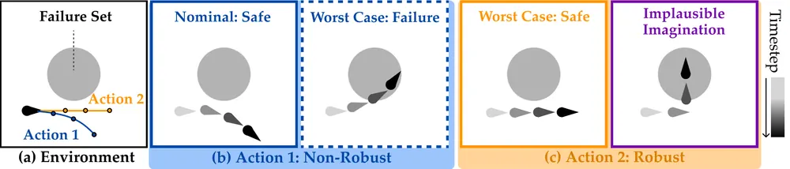
Adapting Vision-Language-Action Models to Unknown Visual Disruptions During Execution
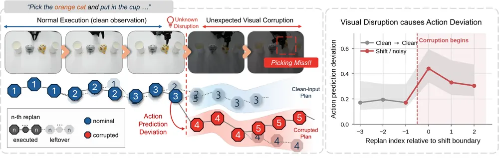
ROMA: LLM System for Real-World Object-Centric Multi-Sensory Active Perception
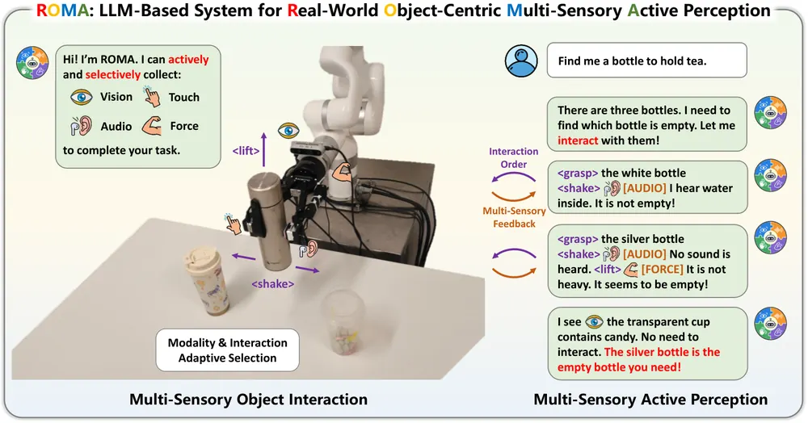
GeoWM: Efficient Direct World Modeling in Explicit Geometry
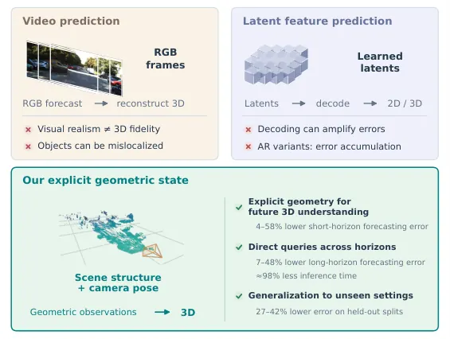
Commit While Futures Agree: Consequence-Aware Adaptive Action Chunking for Robot Manipulation
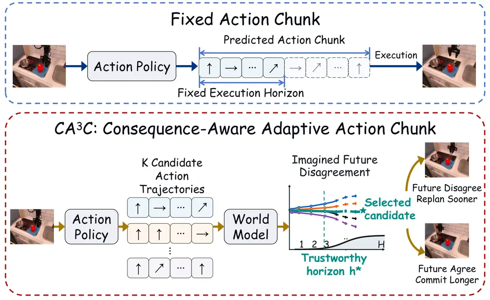
PEARS: Physical-Prior-Guided Efficient Adaptation via Failure Reasoning and Diffusion Steering for Tactile Manipulation
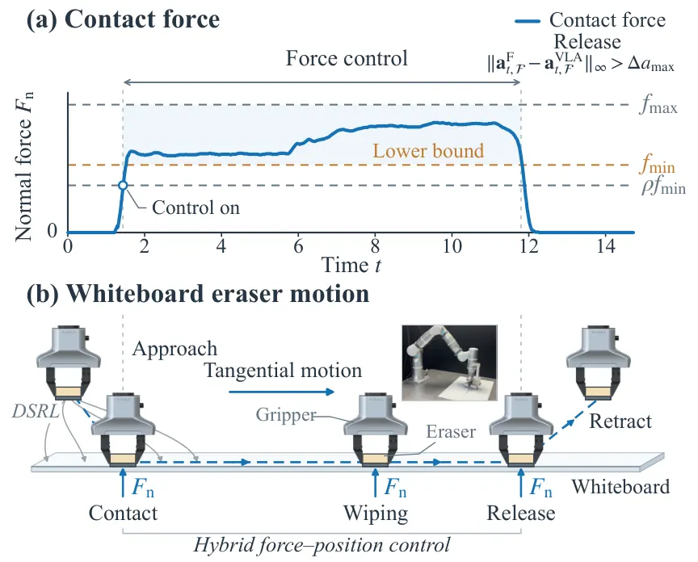
Tracking Is Not Permanence: What Video World Models Keep of a Hidden Object
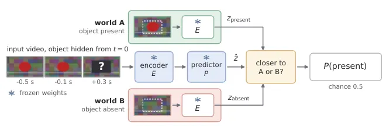
World Models' Last Exam in Physics
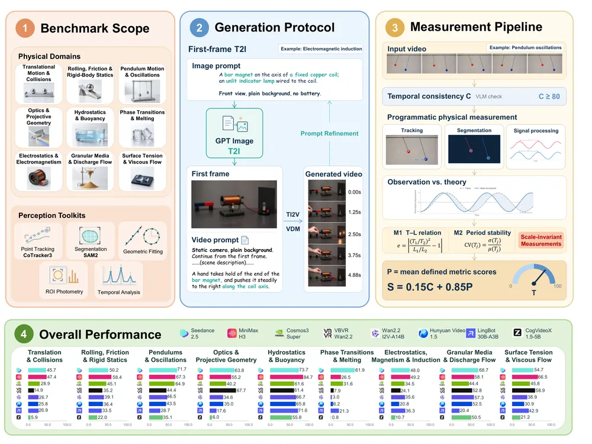
OpenWAM: An Open Framework for Composable World-Action Models
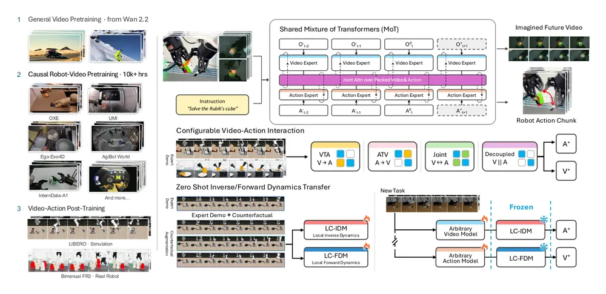
DepthWorld: 3D World Model for Robot Manipulation
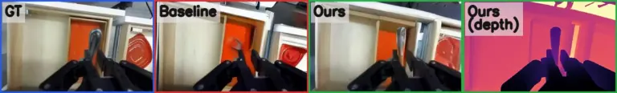
ReDex: Repairing Sim-to-Real Dexterous Policies by Finger-Level Compliant Interaction
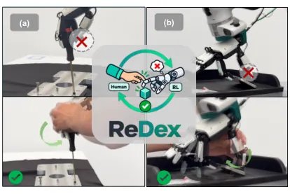
EmbodiedSmith: Scaling Embodied Data through Recursive Self-Improvement Flywheel in Simulation
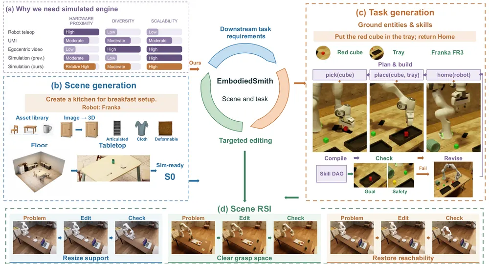
Artemis: Geometry-Grounded Multi-Agent Driving World Models with Shared 3D State and Progressive Memory Update
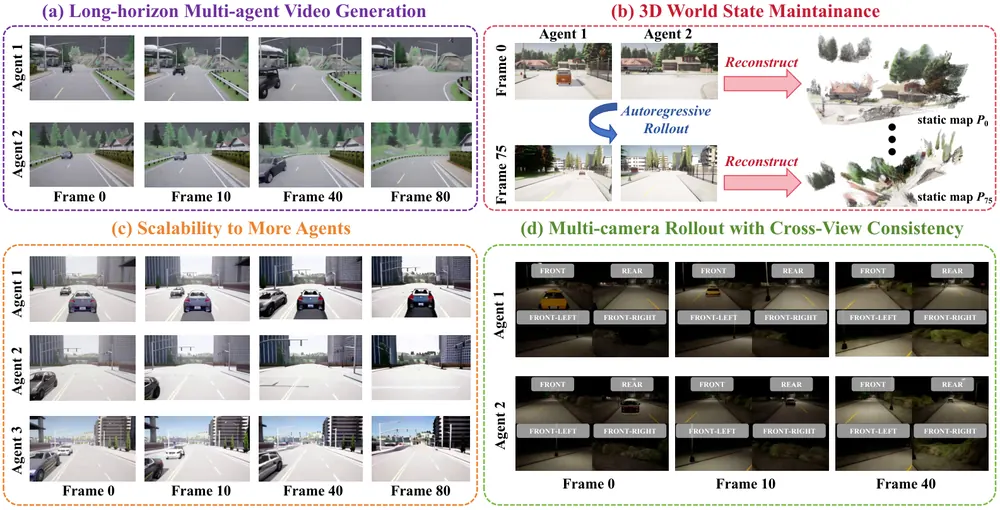
Identifiable World Models from Pretrained Diffusion Representations
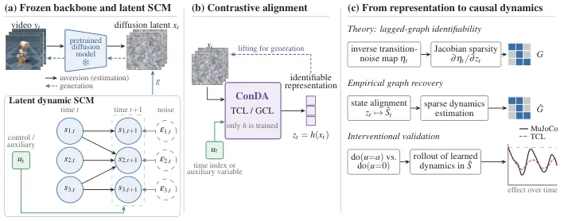
MoonGS: High-quality Representation of the Lunar Surface via Gaussian Splatting Using Robust Depth Features from Image Pairs
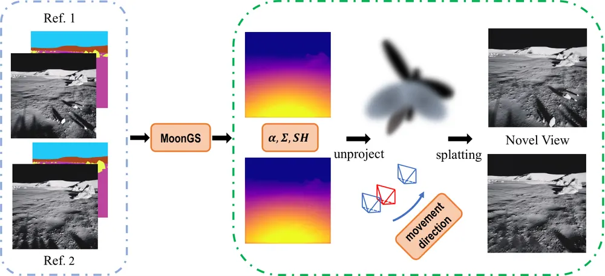
오늘의 핵심 연구 트렌드 종합
- World model 예측 공간의 분화 — world model이 예측하는 대상이 latent token 대신 명시적 depth·point map·causal latent로 세분화되는 흐름임. GeoWM은 depth를 direct horizon query로 예측하고, Artemis는 멀티에이전트가 공유하는 3D point map을 예측 대상으로 삼음.
- World model 신뢰성 정량화 — 생성 품질이 아니라 "이 예측을 믿어도 되는가"를 재는 연구가 늘어남. LUCID는 worst-case latent disturbance를, CA3C는 candidate 미래 간 불일치를 측정함. World Models' Last Exam은 물리 법칙 위반을, Tracking Is Not Permanence는 occlusion 중 belief 유지 여부를 측정함.
- 재학습 없는 test-time 교정 — VLA·action-chunk policy를 추가 학습 없이 실행 중 보정하는 방법이 동시에 여럿 등장함. SALT는 실행 안 한 leftover action을 self-supervision target으로 쓰고, CA3C는 world model 기반 candidate 합의로 execution horizon을 조정함.
- 알고리즘보다 데이터·시스템 엔지니어링 — top 논문 다수의 기여가 새 학습 알고리즘이 아니라 데이터 생성·보정 파이프라인에 있음. EmbodiedSmith는 scene-task closed loop으로 기여함. DepthWorld는 DROID 재보정으로, OpenWAM은 통제 비교용 testbed로 기여함.
- 국소적 실패 진단과 부분 교정 — 전체 재계획 대신 실패 지점만 찾아 고치는 fine-grained 접근이 늘어남. ReDex는 손가락 단위로, PEARS는 VLM 기반 force 진단으로 국소 교정함.
- Active multi-sensory perception의 real-world화 — ROMA가 시뮬레이션에 머물던 active multi-sensory perception을 real-world 대규모 데이터·시스템으로 확장함.
유망 연구 방향 및 프로젝트 제안
World model 사전 신뢰도 추정을 failure recovery에 통합 - research question: VLA policy의 world model이 어떤 action 뒤 상상한 복수 미래가 서로 얼마나 불일치하는지를 실행 전에 측정해 실패를 조기에 예측할 수 있는가 - 접근·novelty: LUCID의 KL-ball(허용 disturbance 범위를 KL divergence로 제한하는 탐색 영역)+OOD uncertainty set과 CA3C의 candidate future disagreement를 결합하고, latent disagreement를 object-centric 3DGS·scene graph 수준에서 해석 가능한 신호로 바꿈 - 왜 지금·경쟁 prior works: 두 논문이 각자 다른 방식(사전 adversarial 탐색 vs 사전 candidate 합의)으로 비슷한 문제를 풀고 있어 통합 여지가 큼. scene-level 해석 가능성을 제공한 연구는 아직 없음 - risk·target venue: world model fine-tuning 비용과 inference latency가 관건임. CoRL·RSS를 target venue로 겨냥함
Occlusion 중 belief 유지를 scene representation 설계 기준으로 반영 - research question: object-centric 3DGS나 scene graph가 occlusion 동안 실제로 object identity·상태를 유지하는지, 유지하지 못하면 manipulation 실패로 이어지는지 - 접근·novelty: Tracking Is Not Permanence의 belief probe(거의 동일한 두 미래를 encoder 표현과 비교)를 scene graph node의 persistence 검증 도구로 재구성함 - 왜 지금·경쟁 prior works: 이 논문은 V-JEPA 2가 가려진 움직이는 물체를 0.27초 안에 잃는다는 것을 직접 보여줌. world model backbone 선택이 실패 복구 설계에 실질적 위험이 됨을 시사함 - risk·target venue: 진단에서 멈추지 않고 실제 manipulation 실패율 개선까지 보여야 함. CoRL·ICRA를 target venue로 겨냥함
Action-chunk leftover 기반 test-time adaptation의 적용 범위 확장 - research question: SALT가 명시한 한계(episode 초반 교란, plan 자체를 무효화하는 교란)에서 leftover를 언제 믿지 말아야 하는지 어떻게 판단하는가 - 접근·novelty: OpenWAM의 counterfactual branch로 leftover plan의 유효성을 사전 검증하는 모듈을 SALT의 adaptation gate에 결합함 - 왜 지금·경쟁 prior works: SALT는 label-free라는 강점이 있지만 plan 무효화 상황에는 무력함을 저자가 직접 인정함. 이 공백을 메우는 후속 연구는 아직 없음 - risk·target venue: counterfactual branch 생성이 시뮬레이터 상태 재현에 의존해 real-robot 확장이 관건임. CoRL을 target venue로 겨냥함
손가락·관절 단위 국소 실패 진단의 generalist화 - research question: ReDex·PEARS처럼 object·task별로 재학습하는 국소 교정을 여러 object에 generalize되는 단일 policy로 만들 수 있는가 - 접근·novelty: PEARS의 VLM 기반 episode별 force bound 갱신을 ReDex의 finger-level shared control과 결합함. object-specific policy 대신 scene graph 기반 contact representation으로 통합함 - 왜 지금·경쟁 prior works: 두 논문 모두 "실패는 국소적"이라는 같은 전제를 쓰지만 서로 다른 modality(force vs tactile·compliance)에 특화돼 있어 결합 여지가 큼 - risk·target venue: generalization 주장을 뒷받침할 다수 object 실험이 필요함. CoRL·IROS를 target venue로 겨냥함
오늘 반드시 읽어야 할 논문
- Modeling Latent Disturbances for Robust Decision-Making in World Models — world model 기반 안전필터에 worst-case latent disturbance를 명시적으로 찾는 adversarial 최적화를 처음 결합함
- Adapting Vision-Language-Action Models to Unknown Visual Disruptions During Execution — action chunk의 미실행분을 label 없이 test-time supervision target으로 재해석한 설계가 명확함
- ROMA: LLM System for Real-World Object-Centric Multi-Sensory Active Perception — active multi-sensory perception을 실제 로봇·대규모 real-world 데이터로 검증함(저자 주장상 최초)
- GeoWM: Efficient Direct World Modeling in Explicit Geometry — forecast target을 latent 대신 depth로 바꿔 horizon 20 기준 VGGT-World 대비 추론 비용을 약 300배, Cosmos-3 대비 약 80배 줄임(4개 driving·aerial·manipulation 데이터셋, action conditioning 없음)
- Commit While Futures Agree: Consequence-Aware Adaptive Action Chunking for Robot Manipulation — world model이 상상한 여러 미래의 불일치로 action chunk 실행 구간을 정하는 inference-time 방법임
- Tracking Is Not Permanence: What Video World Models Keep of a Hidden Object — V-JEPA 2가 benchmark 점수와 무관하게 가려진 물체를 0.27초 안에 잃는다는 것을 직접 반증함
- PEARS: Physical-Prior-Guided Efficient Adaptation via Failure Reasoning and Diffusion Steering for Tactile Manipulation — VLM 기반 실패 진단과 latent noise steering을 역할 분리해 결합한 real-world RL 적응임
- World Models' Last Exam in Physics — 8개 video 생성 모델이 물리 법칙을 어디서 어떻게 위반하는지 레퍼런스 없이 측정해 보여줌
전체 1차 스크리닝 결과 (679편, 점수순) 펼치기
| # | 제목 | 점수 | 🤖 | 분야 | 한 줄 근거 |
|---|---|---|---|---|---|
| 1 | GeoWM: Efficient Direct World Modeling in Explicit Geometry | 72 | 7 | World Model | 명시적 기하구조를 직접 예측해 롤아웃 오차 누적을 줄이는 geometry world model로 world model 우선주제에 정확히 부합함 |
| 2 | Modeling Latent Disturbances for Robust Decision-Making in World Models | 70 | 9 | World Model | world model latent space에 conformal prediction으로 보정된 적대적 교란을 정의하고 게임이론적 최적화로 로버스트 제어, Franka 실험에서 실패 70% 감소함 |
| 3 | Artemis: Geometry-Grounded Multi-Agent Driving World Models with Shared 3D State and Progressive Memory Update | 70 | 7 | World Model | 명시적 3D state와 기하 제약을 갖춘 멀티에이전트 주행 world model로 world model 우선주제와 직접 연관됨 |
| 4 | Tracking Is Not Permanence: What Video World Models Keep of a Hidden Object | 70 | 7 | World Model | V-JEPA2가 가려진 객체를 얼마나 오래 내부적으로 유지하는지 정량 분석해 world model의 object permanence와 memory 한계를 드러냄 |
| 5 | EmbodiedSmith: Scaling Embodied Data through Recursive Self-Improvement Flywheel in Simulation | 68 | 8 | Embodied AI | asset·scene·task 생성을 통합한 재귀적 자기개선 시뮬레이션 플라이휠로 로봇 foundation model 학습 데이터 스케일링에 직접 기여함 |
| 6 | OpenWAM: An Open Framework for Composable World-Action Models | 65 | 8 | World Model | video backbone과 action expert 결합 구조를 모듈화해 비교 가능한 world-action model 플랫폼을 제시, counterfactual 데이터로 역/정방향 동역학 학습을 향상시킴 |
| 7 | Adapting Vision-Language-Action Models to Unknown Visual Disruptions During Execution | 65 | 8 | VLA | action chunk의 미실행 잔여분을 자가 supervision으로 활용해 VLA를 시각 교란에 test-time adaptation시키는 새로운 패러다임으로 실로봇 검증 포함함 |
| 8 | Commit While Futures Agree: Consequence-Aware Adaptive Action Chunking for Robot Manipulation | 65 | 8 | World Model | world model로 상상한 복수 미래의 합치 여부로 action chunk commitment 길이를 Bayesian change-point로 결정, 실패율을 최대 71.8% 줄임 |
| 9 | DepthWorld: 3D World Model for Robot Manipulation | 65 | 8 | World Model | 스테레오 깊이와 factor graph로 DROID-3D를 보정 제작하고 RGB·depth를 동시 예측하는 world model을 학습, depth supervision이 RGB 예측까지 개선함 |
| 10 | PEARS: Physical-Prior-Guided Efficient Adaptation via Failure Reasoning and Diffusion Steering for Tactile Manipulation | 65 | 8 | Manipulation | VLM의 물리적 사전지식으로 실패를 진단해 접촉력 경계를 갱신하고 diffusion steering으로 보정하는 test-time 적응 RL로 real-world 성공률 90% 이상을 달성함 |
| 11 | MoonGS: High-quality Representation of the Lunar Surface via Gaussian Splatting Using Robust Depth Features from Image Pairs | 65 | 7 | 3D Vision | 두 장 이미지만으로 월면 지형을 재구성하는 feed-forward 3DGS로 자율 월면 탐사 로봇 적용에 직접 연관됨 |
| 12 | World Models' Last Exam in Physics | 65 | 7 | World Model | 역학·광학·유체·열 등 40개 과제로 비디오 world model의 물리적 일관성을 측정하는 벤치마크로 embodied AI 계획 신뢰성 문제에 직접 부합함 |
| 13 | Identifiable World Models from Pretrained Diffusion Representations | 65 | 6 | World Model | frozen diffusion latent에 nonlinear ICA로 식별 가능한 좌표를 부여해 world model의 상태변수 복원 가능성을 이론적으로 다룬 연구로 causal reasoning·world model 우선주제에 정확히 부합함 |
| 14 | ROMA: LLM System for Real-World Object-Centric Multi-Sensory Active Perception | 62 | 9 | Embodied AI | 부족한 감각 증거를 스스로 판단해 상호작용으로 채우는 LLM 기반 능동 멀티센서 지각 시스템임. 2000개 객체 규모의 실제 데이터셋(ROMI-2K)과 새 벤치마크까지 구축해 active perception 연구로서 기여가 큼. |
| 15 | ReDex: Repairing Sim-to-Real Dexterous Policies by Finger-Level Compliant Interaction | 62 | 8 | Manipulation | 손가락 단위 human correction과 force-conditioned policy로 sim-to-real dexterous 정책을 보강해 성공률을 14%에서 86%로 크게 올림 |
| 16 | ViDAL: A Visual Dynamics-Grounded Action Latent Space for Vision-Language-Action Models | 62 | 8 | World Model | action latent을 미래 시각 동역학에 정렬시키는 ViDAL로 여러 VLA 아키텍처·실로봇에서 일관된 성능 향상을 보임 |
| 17 | Preserving Unstable Modes Through Inverse Dynamics in JEPA World Models | 62 | 7 | World Model | JEPA world model이 불안정 모드를 보존하지 못하는 문제를 inverse dynamics로 해결한 연구임. world model의 제어가능성 보존을 직접 다뤄 로보틱스 연관성이 높음. |
| 18 | OntoPlan: An Ontology-Grounded Scene Representation and Agentic Framework for Scalable Robot Task Planning | 62 | 7 | Embodied AI | ontology 기반 scene representation과 agentic 계획으로 장기 과제 성공률을 0.27에서 0.89로 올리며 토큰도 5.6배 절감한 NeurIPS 2026 논문임 |
| 19 | SMART: Zero-Shot Sim-to-Real Articulated Object Manipulation via Large-Scale Synthetic Pretraining | 60 | 8 | Manipulation | articulation-aware 시뮬레이터로 100만개 synthetic demo를 생성해 VLA를 pretraining, articulated object에서 zero-shot sim-to-real 전이를 달성함 |
| 20 | IronMan: Information-Constrained Video-Action Learning for Robot Manipulation | 60 | 8 | World Model | information bottleneck으로 video-action 표현에서 행동 무관 정보를 억제, OOD 강건성에서 기존 baseline보다 10.4%p 높은 성공률을 보임 |
| 21 | AutodidactWAM: Cross-Modal Self-Distillation from Generated Video to Robot Actions | 60 | 8 | World Model | world-action model의 video-action 비대칭을 포즈 추정 기반 self-distillation으로 해결, humanoid 실로봇 pick-and-place 성공률을 7%에서 42%로 끌어올림 |
| 22 | EgoLAP: Learning from Egocentric Human Data through Language-Action Reasoning | 60 | 8 | VLA | human-robot 공유 language action chain-of-thought로 egocentric human data를 VLA에 전이, 대안 action 표현보다 2.3배 높은 실제 성공률을 보임 |
| 23 | Sim-to-Real Transfer of Vision-Language Navigation in Continuous Environments Using an Ackermann-Steered Mobile Robot | 60 | 8 | Navigation | 그래프·panorama 없는 continuous VLN을 실제 Ackermann 로봇에 sim-to-real 전이한 실험으로 실로봇 검증이 있으나 기존 CMA 구조를 그대로 적용한 수준의 기여임 |
| 24 | SpaTime: Streaming Vision-Language Models for Spatio-temporal Reasoning | 60 | 7 | Embodied AI | 비디오가 들어오는 동안 causal geometry token을 매 프레임 융합하는 streaming VLM으로 embodied spatio-temporal reasoning에 직접 부합함 |
| 25 | Task-Space Imitation Guidance for Efficient Reinforcement Learning | 60 | 7 | Manipulation | imitation chunk를 task-space progress reward로 변환해 sparse-reward RL 샘플 효율을 높인 CoRL 2026 논문으로 실로봇 검증 포함함 |
| 26 | OpenSplatGraph: From Dense Semantic Maps to Structured Scene Graphs for Open-Vocabulary Robot Perception | 60 | 7 | 3D Vision | 온라인 3DGS 기반 open-vocabulary semantic map에서 신뢰도 기반 object-centric scene graph를 직접 구축해 구조적 추론을 지원함 |
| 27 | SWAP: Stepwise Action Policy Routing for Vision-Language-Action Models | 58 | 9 | VLA | 여러 VLA 정책을 offline RL로 학습한 routing critic이 매 스텝 선택하게 하는 프레임워크임. DROID 실로봇과 LIBERO 시뮬레이션에서 성공률을 최대 33%p 높여 skill composition에 실질적 기여를 함. |
| 28 | PhysTacGen: Physics-Aware Visual-Tactile Sensor Image Generation | 58 | 7 | Manipulation | 물성 인지 묘사와 기하 조건화로 시각-촉각 변환을 수행하는 기법으로 tactile perception 데이터 증강에 직접 연관됨 |
| 29 | MobileVISTA: Generative Data Augmentation for Pose Generalization in Mobile Manipulation | 58 | 7 | Manipulation | 자세 변화에 따른 egocentric 관측·행동을 함께 augmentation하는 데이터 생성법으로 humanoid 등 실로봇에서 OOD pose 강건성을 개선함 |
| 30 | ESP: Energy-Score Policy for One-Step Multimodal Action Generation | 58 | 7 | VLA | energy score로 noise를 action chunk에 직접 매핑하는 teacher-free one-step policy로 flow matching 대비 지연시간을 크게 줄이며 성공률은 유지함 |
| 31 | Seeing Through the Displaced Frame: Privileged Noise Distillation for Vision-Force Precision Assembly | 58 | 7 | Manipulation | pose 오차가 action frame까지 오염시키는 문제를 privileged teacher로 해결해 FORGE 조립 task에서 노이즈 5mm 조건 성공률을 34%에서 83%로 끌어올림 |
| 32 | CUSP: CUSUM-Governed Survival Hazard Alarms at the Perception Onset for Off-Road Navigation | 58 | 7 | Navigation | 개입 로그만으로 '안전이 위험으로 전환되는 순간'을 CUSUM survival 모델로 학습, off-road 5개 미지 환경에서 기존 baseline보다 3배 많은 위험을 탐지함 |
| 33 | PACE: Stage-Consistent Long-Horizon Robot Manipulation via Progress-Aligned Context for Execution | 58 | 7 | Manipulation | 실행 진행도에 맞춰 demonstration을 재해석하는 fast-weight memory로 stage confusion을 해소, 2단계 task 성공률을 33%에서 73%로 크게 올림 |
| 34 | Humanoid Horizon: Extending Task Horizon in Whole-Body Loco-Manipulation via Parallel Training, Dynamic Starting, and Reward Gating | 58 | 7 | Manipulation | 병렬 training·동적 시작점·reward gating으로 장기 whole-body loco-manipulation의 easy-reward bias와 catastrophic forgetting을 완화, 단계별 성공률 80% 이상을 달성함 |
| 35 | RIWANav: Recursive World-Action Models with Self-Improvement for Urban Navigation | 58 | 7 | World Model | world model과 policy를 GRPO로 교차 개선하는 recursive self-improvement 루프를 제안, 도시 navigation에서 baseline을 능가하고 실세계 trial로 검증함 |
| 36 | QF3: Fast Flow RL with Filtered Q-Gradients | 58 | 7 | RL | flow policy에 critic gradient를 선택적으로 적용한 최초의 off-policy flow RL로 humanoid locomotion을 처음부터 학습해 zero-shot 하드웨어 전이에 성공함 |
| 37 | VeriFine: Scaling Verification for Self-Improvement in Embodied Reasoning | 58 | 7 | Embodied AI | policy·커리큘럼·judge가 공진화하는 verification scaling 프레임워크로 driving과 robot navigation에서 RL·SFT 전반의 지속적 자가개선을 보여 failure detection과 test-time optimization 주제에 직접 부합함 |
| 38 | M3SunAgent: Monocular 3D Spatial Understanding Agent for Metric Depth Estimation and 3D Visual Grounding | 58 | 6 | Embodied AI | LLM 플래너로 단안 depth 추정과 3D visual grounding을 통합한 에이전트로 embodied spatial reasoning에 직접 연관됨 |
| 39 | 4D-HOF: Hand-Object Flow Matching for Feed-Forward 4D Interaction Reconstruction | 58 | 6 | Manipulation | foundation model의 손-물체 상태 추정을 flow matching으로 보정하는 feed-forward 4D 재구성 기법으로 dexterous manipulation 모델링에 직접 연관됨 |
| 40 | DensiTok: Making Feed-Forward 3D Gaussian Splatting See More Views Than It Is Given | 58 | 5 | 3D Vision | 희소 입력뷰에서도 내부 표현이 미관측 영역 증거를 보강하도록 만든 feed-forward 3DGS로 object-centric 3D representation 개선에 기여함 |
| 41 | Does a Learned Corrector Beat a Simple Retreat? Evidence from a Frozen VLA | 55 | 9 | VLA | 고정된 VLA 정책에 runtime recovery를 적용했을 때 단순 후퇴 동작 대비 실제로 이득이 있는지 placebo 대조로 엄격히 검증한 연구임. failure recovery의 실질적 효과를 통계적으로 따진 보기 드문 실증 연구이나 4개 과제 중 1개에서만 유의한 이득을 보여 결과는 제한적임. |
| 42 | ACG-WAM: World-Action Modeling via Action-Conditioned Geometric Latent Prediction | 55 | 9 | World Model | world-action model에 기하학적 latent를 예측하는 auxiliary objective(ACG-JEPA)를 추가해 행동의 기하학적 결과를 명시적으로 학습시킨 연구임. RoboTwin 50개 과제와 실로봇 3개 과제에서 기존 Motus 대비 큰 성능 향상을 보임. |
| 43 | ProactiveVLA: Augmenting Embodied Memory through Proactive Environment Exploration | 55 | 9 | VLA | 고정된 VLA에 메모리를 결합하고 로봇이 스스로 탐색 목표를 세워 재사용 가능한 경험을 축적하게 한 연구임. LIBERO-Pro에서 기존 task-refinement baseline 대비 성공률을 19%에서 48%로 크게 높임. |
| 44 | R2RI: A Multi-View Event and RGB Dataset for Robot-to-Robot Interaction | 55 | 7 | Embodied AI | 로봇간 상호작용(RRI)을 위한 최초의 대규모 멀티뷰 이벤트+RGB 데이터셋으로 로봇 연구에 직접 연관되나 데이터셋 중심 기여임 |
| 45 | What the Elevation Map Cannot See: Semantic-Aware Locomotion and Execution-Aware Navigation for Humanoid Robot | 55 | 7 | Navigation | humanoid VLN에서 elevation map이 놓치는 위험과 명령-실행 불일치를 드러낸 benchmark로 실로봇(G1) 검증 포함함 |
| 46 | Seeing the Invisible: Physics-Guided Visual Prompting for Temperature- and Radiation-Aware VLA Navigation | 55 | 7 | VLA | frozen VLA에 가상 장애물을 overlay하는 방식으로 비가시 위험(열·방사선)을 회피시키는 plug-and-play 기법으로 실제 열·방사선원 테스트를 했음 |
| 47 | BiGym 2.0: Benchmarking Learned and Agent-Developed Policies for Humanoid Household Manipulation | 55 | 7 | Manipulation | G1 humanoid 20개 가정용 task에 대해 VLA·IL·RL·coding agent를 통일된 조건으로 비교한 benchmark로 lab 관심 영역에 유용한 인프라임 |
| 48 | TacZero: Training-Free Peg Insertion Using a General-Purpose Vision-Language Model with Tactile Feedback | 55 | 7 | Manipulation | 범용 VLM에 촉각 수치를 overlay해 재학습 없이 contact-rich peg insertion을 수행, tactile 입력시 성공률이 2배로 상승함 |
| 49 | EigenDEXplore: Structured Exploration for Dexterous Manipulation with Human Priors | 55 | 7 | Manipulation | human-derived eigenvector 방향의 perturbation으로 탐색만 구조화하는 EigenDEXplore로 dexterous manipulation 전반에서 일관된 성능 향상을 보임 |
| 50 | ExoBridge: Learning a Bare Hand to Hand-Worn Exoskeleton Mapping through Human Limb Coupling | 55 | 7 | Manipulation | 양손 연동을 활용해 맨손 영상에서 exoskeleton 촉각·모션 상태를 예측하는 bridging function으로 tactile supervision 없는 human video 학습을 지원함 |
| 51 | CoRE: Learning Collaboration-Role Experts for Decentralized Collaborative Manipulation with One Policy | 55 | 7 | Manipulation | 역할 라벨 없이 query 조건 cross-attention expert를 학습해 단일 정책으로 분산 협업 조작을 수행, partner 지연에도 견고함을 보임 |
| 52 | iGPC: Generative Motion Priors for Object-Aware Humanoid Interaction | 55 | 7 | Embodied AI | human motion prior를 활용한 Generative Pretrained Controller를 object affordance 기반 interaction expert로 확장, 지각 기반 student로 distillation함 |
| 53 | Compact Robot Policies Need Fine-Grained Visual Representations | 55 | 7 | Manipulation | 48.9M 파라미터 compact policy로 시각 표현의 pretrain·압축·언어조건 각 요소를 분리 실험, 표현학습이 성능의 핵심임을 체계적으로 입증함 |
| 54 | How Much Planning Is Enough? Reducing Search and Computation in World-Model Planning | 55 | 7 | World Model | world model planning에서 model-task별 충분 예산을 인증하고 context를 캐싱해 검색 비용을 줄이는 test-time 배포 기법으로 성능은 유지함 |
| 55 | Digital Twin-Driven Real2Sim2Real: Simulator-Conditioned Generation via Paired Driving-Scene Reconstruction | 55 | 6 | Embodied AI | 디지털 트윈 기반 Real2Sim2Real 파이프라인으로 시뮬레이터 조건화 생성의 시각적 접지 문제를 다뤄 sim-to-real 데이터 생성에 직접 연관됨 |
| 56 | RenderBench: Benchmarking Render-to-Real Video Transfer with Reconstructed Digital Twins | 55 | 6 | World Model | 재구성된 디지털 트윈 기반 render-to-real 비디오 전이 벤치마크로 world model 평가와 sim-to-real 전이에 직접 연관됨 |
| 57 | The Robot Is Not Its Description: GaugeBench for Representation Robustness in Morphology-Aware Policies | 55 | 6 | Embodied AI | robot description의 임의 규약 변경만으로 morphology-aware policy 성능이 급락함을 보여 cross-embodiment 평가의 숨은 결함을 드러냄 |
| 58 | Hierarchy-GBP: Accelerating Factor Graph Inference via Abstraction and Recovery | 55 | 5 | 3D Vision | Gaussian belief propagation 가속화로 SLAM/factor graph 기반 공간 추론 가속에 기여함 |
| 59 | PhysLDM: Latent Diffusion for High-Fidelity Deformable Simulation | 55 | 5 | World Model | 변형체 물리 시뮬레이션을 위한 latent diffusion 기법으로 물리적 상호작용 world model과 연관됨 |
| 60 | Parallel Predictive World Models for Accurate and Efficient Long-Horizon Planning | 55 | 5 | World Model | 자기회귀 롤아웃 없이 horizon 전체를 병렬로 예측하면서 미래 표현 간 인과적 상호작용을 유지하는 world model로 visual-control task에서 예측 오차와 planning 속도를 모두 개선해 test-time planning에 바로 쓸 수 있는 기여임 |
| 61 | MIM-VLA: Learning Physical Interaction Representations from Gripper Motor Feedback | 52 | 7 | VLA | gripper 전류·속도 등 모터 피드백을 interaction token으로 인코딩해 추가 센서 없이 접촉 저항을 구분, SmolVLA 대비 식별 정확도를 크게 높임 |
| 62 | StairVLA: Stage-Aware Hierarchical Action Generation for Vision-Language-Action Models | 52 | 6 | VLA | denoising 단계별로 coarse-to-fine을 분리한 계층적 VLA action head로 LIBERO에서 지연시간을 115ms에서 44ms로 줄이면서 성능은 유지함 |
| 63 | VOMMI: Collecting and Leveraging Portable Demonstrations for Mobile Manipulation | 52 | 6 | Manipulation | 로봇 없이 RGB로 수집한 portable demonstration을 visual odometry 보정으로 VLA post-training에 활용, OpenPI 0.5보다 8.3%p 성공률을 높임 |
| 64 | WareFly-VLA: A Vision-Language-Action Framework for UAV Navigation and Human Tracking in Smart Warehouses | 52 | 6 | VLA | 창고 환경 UAV 언어유도 추적을 위한 photorealistic benchmark로 continuous action이 discrete보다 우수하고 지상/humanoid VLA가 공중으로 잘 전이되지 않음을 보임 |
| 65 | CtrlCache: Accelerating Interactive Video World Models with Control-Aware Caching | 52 | 5 | World Model | 제어 신호가 디노이징 전에 도착함을 활용한 control-aware 캐싱으로 상호작용형 비디오 world model 가속에 기여함 |
| 66 | Learning in Dreams, Winning in Reality: A Continuous Dyna Loop for a Ten-Hero MOBA | 52 | 3 | World Model | 10영웅 MOBA 전체를 구조화된 world model로 학습하고 상상 속에서만 정책을 훈련해 실제 게임 승률로 평가한 continuous Dyna loop로 model exploitation과 world model 보정 문제를 명확히 드러내지만 게임 도메인이라 robot에는 직접 적용되지 않음 |
| 67 | LEAP: Making Privileged Geometry Supervision Effective for Visuomotor Learning | 50 | 8 | Manipulation | privileged 3D supervision이 실제로 유용한 기하 정보를 학습시키지 못하는 세 가지 원인(proprioceptive shortcut 등)을 짚고 이를 해소하는 보조 디코더를 제안한 연구임. RoboTwin·ManiSkill·실로봇 전반에서 Diffusion Policy·ACT 대비 일관된 개선을 보임. |
| 68 | Behavioral Cloning Mystery | 50 | 8 | RL | 행동복제의 반직관적 현상들(과적합일수록 성능 향상, action chunking 없이는 완전 실패 등)을 통제된 스크립트 정책 벤치마크(OCBench)로 과학적으로 검증한 연구임. 기존 가설 다수를 반박해 imitation learning 이해에 기여함. |
| 69 | Sensor-Layout-Agnostic Navigation via Geometric Observation Canonicalization | 50 | 6 | Navigation | 임의의 depth sensor 배치를 공유 구면 range image로 정규화해 센서 layout에 무관한 navigation 정책을 학습, 실제 쿼드로터 비행으로 검증함 |
| 70 | Event-Driven Proactive Robot Assistance through Vision-Language Reasoning | 50 | 6 | Embodied AI | 사용자 지시 없이 작업공간 상태 변화만으로 frozen VLM이 보조 행동을 추론하는 event-driven proactive assistance로 지시 기반 변형과 유사한 성능을 냄 |
| 71 | One for All, All for One: Coordinated Multi-Agent Diffusion Steering via Stochastic Optimal Control | 50 | 6 | RL | frozen diffusion 생성기들을 stochastic optimal control로 조율하는 CMDS로 maze·articulated planning·motion 등에서 재사용 가능한 조율 제어를 보임 |
| 72 | Revisiting Numerical Forecasting Models for Language-Based Trajectory Prediction | 50 | 5 | Navigation | 수치 예측 사전지식을 RL(Mixture of Reward Experts)로 언어기반 경로예측에 전이해 사회적 로봇 내비게이션 궤적예측과 연관됨 |
| 73 | ProCut: Probabilistic Cutting Topology for Autonomous Electrosurgical Tissue Dissection | 50 | 5 | Manipulation | 미분가능 PBD와 SVGD로 조직 절개 중 위상 변화를 확률적으로 추정하는 수술 로봇 연구로 niche하지만 방법이 신선함 |
| 74 | Revar3r: gauge-aware perturbation uncertainty for feed-forward 3d reconstruction | 50 | 4 | 3D Vision | feed-forward 3D 재구성에서 대칭성과 오차를 구분하는 closed-form 불확실성 추정으로 능동 지각/불확실성 정량화에 연관됨 |
| 75 | Have I Seen Enough? Frozen Video-Language Models Encode Evidence Readiness | 50 | 4 | Multimodal | frozen video-LLM이 증거 충분성(evidence readiness)을 이미 선형적으로 인코딩함을 보인 분석으로 streaming 로봇 지각의 의사결정 타이밍에 연관됨 |
| 76 | BRACE: Adapting Whole-Body References for Force and Terrain Aware Humanoid Motion Tracking | 48 | 8 | Manipulation | 인간형 로봇의 전신 추종기에 힘 보정과 지형 적응을 동시에 접어넣어, teleoperator는 평지 궤적만 주면 로봇이 경사와 하중을 스스로 해결하게 한 연구임. Unitree G1 실로봇 실험으로 검증함. |
| 77 | RMRRT: Riemannian Barrier Metric RRT for Inequality-Aware Steering on Equality Manifolds | 48 | 7 | Manipulation | 등호·부등호 제약을 하나의 Riemannian metric으로 통합한 샘플링 기반 모션 플래너임. 제약 매니퓰레이션에서 100% 성공률과 실제 로봇 실험으로 검증함. |
| 78 | Revisiting Temporal Regularization for Smooth Control in Deep Reinforcement Learning | 48 | 6 | RL | temporal action regularization이 observation noise 하에서도 spatial smoothness를 제공함을 증명한 연구임. 로봇 배치를 위한 action smoothness 문제를 직접 다룸. |
| 79 | Risk-Sensitive Crowd Navigation with Adaptive Ellipsoidal Conformal Prediction | 48 | 6 | Navigation | anisotropic conformal prediction으로 군중 내 방향성 불확실성을 CVaR 안전 신호로 변환한 navigation으로 실로봇 검증 포함함 |
| 80 | Nine Trials to Recover: A Reproducible Benchmark for Repertoire-Free Soft-Robot Damage Adaptation | 48 | 6 | RL | 손상된 soft robot의 복구를 GP-EI로 9회 trial 내 수행하는 재현 가능한 benchmark로 damage adaptation 분야에 기준점을 제공함 |
| 81 | Beyond Retargeting: Low-Latency and Robust Humanoid Whole-Body Teleoperation with Learned Atomic Motion Primitives | 48 | 6 | Embodied AI | 온라인 retargeting 없이 human motion을 바로 joint command로 매핑하는 humanoid teleoperation으로 motion primitive codebook이 OOD 강건성을 제공함 |
| 82 | Reactive Task-Oriented Robot-Human Handovers via Generative Hypothesis Selection | 48 | 6 | Manipulation | VLM 이미지 생성으로 task별 손 포즈 가설을 만들어 실시간 매칭하는 handover 방법으로 사용자 평가에서 task 이해도가 높게 평가됨 |
| 83 | Navigation with RF Cues: Embodied Perception Action under Multipath Uncertainty | 48 | 6 | Navigation | RF multipath 불확실성을 고려한 멀티모달 navigation으로 시각이 어려운 공장 환경에서 SR·SPL을 모두 개선한 새 benchmark를 제시함 |
| 84 | Feeling Through the Load: Compliant Quadruped Locomotion under Payload Interactions | 48 | 6 | RL | payload와의 의도적 상호작용을 구분하는 force-aware locomotion으로 causal force estimator를 결합해 순응적 보행을 실현함 |
| 85 | EVFormer: An Egocentric Vision-EMG Bidirectional Attention Model for Bimanual Hand Pose Estimation | 48 | 5 | Manipulation | RGB와 손목 sEMG를 결합한 양손 자세추정 기법으로 teleoperation/bimanual manipulation 센싱에 직접 연관됨 |
| 86 | Attacca: Goal-Directed Control under State Continuity for Long-Horizon Embodied Agents | 48 | 5 | Embodied AI | search-to-interact 전체 궤적에서 학습한 visual goal-conditioned policy로 long-horizon embodied task의 상태 연속성 문제를 다루나 환경이 Minecraft에 한정됨 |
| 87 | ElasticFit: Fit-Aware 3D Object Insertion via VLM Reasoning and Generative Adaptation | 48 | 4 | 3D Vision | VLM 추론과 생성적 적응으로 지역 기하에 맞춰 3D 객체를 삽입하는 기법으로 object-centric scene composition과 연관됨 |
| 88 | Post-Training Semantic Lifting for 3D Gaussian Splatting: Separating Detector, Lifting and Representation Error | 48 | 4 | 3D Vision | 탐지기/리프팅/표현 오차를 분리한 post-training semantic lifting 기법으로 3DGS 기반 scene graph 구축에 연관됨 |
| 89 | Building Rome from a Single Image | 48 | 4 | 3D Vision | 객체 중심 3D 생성기를 실내외 전체 장면으로 확장한 단일 이미지 장면 생성 기법으로 embodied 시뮬레이션 환경 구축에 연관됨 |
| 90 | SharedKV-BT: Node-Local Typed Decisions for Behavior-Tree Agents | 46 | 5 | Embodied AI | behavior tree 기반 결정 가속화로 manipulation·navigation closed-loop 성공률 개선했으나 추론 효율화 위주 기여임 |
| 91 | AIM: Adaptive Interaction Modeling Networks for Real-to-Sim Soft-Body Simulation | 45 | 7 | World Model | 변형체 조작을 위한 real-to-sim 시뮬레이션에서 입자 관계를 지역-전역으로 적응시킨 연구임. 로봇-인간 조작 간 zero-shot 전이까지 보이고 PhysTwin·PGND 대비 오차를 20% 이상 줄임. |
| 92 | RoboCap: A New Platform for Egocentric Robot Learning | 45 | 7 | Manipulation | 착용형 6카메라 egocentric 데이터 수집 하드웨어와 3D 알고리즘 플랫폼(RoboCap)을 구축한 연구임. SLAM·깊이추정·손추적에서 SOTA를 보여 로봇학습 데이터 스케일링에 실용적 기여를 함. |
| 93 | Learning Grasp Targeting from Point Clouds for Log Pile Clearing on a Hydraulic Crane | 45 | 6 | Manipulation | unsegmented point cloud에서 grasp target을 학습해 실제 유압 크레인 통나무 더미 clearing에 적용한 BC/RL 연구로 응용 도메인이 좁음 |
| 94 | Reactive Exploration of Unknown Environments for Redundant Robots using Virtual Model Control | 45 | 6 | Navigation | 미지 공간에서 정보 획득 기대값으로 voxel을 선택하고 Virtual Model Control로 전신 회피를 수행하는 active exploration 연구임 |
| 95 | Beyond Task Reward: A Controller-Restriction Protocol for Evaluating Embodiment-Dependent Competence | 45 | 5 | Embodied AI | controller를 저복잡도로 제한한 상태의 task competence로 morphology 평가 지표를 재정의한 co-design 방법론 연구임 |
| 96 | Model-Based Geometry-Aware Generative Optimization for Constrained Locomotion Planning | 45 | 5 | RL | constraint geometry를 denoising score에 직접 반영한 model-based diffusion 궤적 최적화로 제약된 locomotion 계획의 성공률을 높임 |
| 97 | HygieneRoboBench: Benchmarking Hygiene-Aware Planning for Household Robots | 45 | 5 | Embodied AI | 접촉 이력 기반 위생 위험을 식별·대응하는 household 계획 benchmark와 LLM+CP-SAT 결합 planner로 안전 해결률 94.4%를 달성함 |
| 98 | LBA-CBF: Rapidly Adaptive Safety Filters via Parallel Dynamics Inference | 45 | 5 | RL | 최근 예측오차로 동역학 모델 bank를 순위화해 CBF를 강화하는 LBA-CBF로 급격한 환경 변화에서도 안전성을 수학적으로 보장함 |
| 99 | Image-Space Refraction Correction for Underwater 3D Reconstruction: Warping Flat-Port Views into Pinhole Perspective | 45 | 4 | 3D Vision | flat-port 수중 카메라의 굴절 왜곡을 이미지 공간에서 보정하는 기법으로 수중 로봇 매핑에 연관됨 |
| 100 | DistScene: Object-to-Scene Distillation for 3D Scene Generation | 45 | 3 | 3D Vision | 단일 이미지 기반 장면-객체 분리 3D 생성으로 object-centric 3D representation과 연관됨 |
| 101 | PlaySuite: A Large-Scale Benchmark for Interactive Visual Intelligence | 45 | 3 | Embodied AI | 5천여 개 비디오게임 환경에서 장기간 상호작용 지능을 평가하는 벤치마크로 embodied 의사결정과 연관됨 |
| 102 | What Words Keep of a Place: Zero-Shot Language Reasoning for Cross-View Geo-Localization | 45 | 3 | Navigation | 언어 기반 zero-shot cross-view geo-localization으로 로봇/UAV 위치추정에 참고될 수 있음 |
| 103 | From the Drosophila Visual Connectome to General-Purpose Computer Vision | 45 | 2 | CV | 초파리 시각 커넥톰 구조를 차용한 일반 목적 비전 아키텍처로 적은 파라미터로 강한 성능을 보여 representation 영감을 줄 수 있음 |
| 104 | Generalizable Robustness Testing of DNN-Based Robotic Navigation Systems via XAI-Guided Search | 42 | 6 | Navigation | XAI로 유도한 섭동 탐색으로 DNN 기반 로봇 내비게이션의 안전성을 테스트하고 실제 로봇까지 검증한 연구임. sim-to-real 전이까지 확인한 점이 실용적임. |
| 105 | Entropy-Gated Belief Coordination for Decentralized Multi-Agent Search Under Intermittent Communication | 42 | 5 | RL | 통신 제한 상황에서 entropy 기반 belief fusion 게이팅을 제안한 분산 다중로봇 탐색 기법으로 분석이 체계적임 |
| 106 | Multi-Robot Multi-Goal Motion Planning with Stochastic Skills | 42 | 5 | Navigation | 확률적 skill 실행시간을 MDP로 모델링해 다중로봇 motion planning에서 반응적 조율을 가능케 한 방법론 연구임 |
| 107 | From Legs to Wheels: Embodiment-Aware Human Motion Retargeting for Mobile-Base Humanoids | 42 | 5 | Embodied AI | 바퀴형 베이스 humanoid를 위해 human motion을 base·lift·arm 책임으로 분해하는 embodiment-aware retargeting 연구임 |
| 108 | A Belief-State World Model for Catheter Navigation under Sparse Fluoroscopy: A Planar Proof of Concept | 42 | 5 | World Model | sparse fluoroscopy 하 카테터 navigation을 belief-state world model(POMDP+particle filter)로 수행한 개념 증명으로 단순 2D phantom에 한정됨 |
| 109 | Pareto-Optimal Entropy-Regularized Trajectory Optimization | 42 | 5 | RL | entropy 정규화와 Pareto filtering으로 DDP 궤적최적화의 탐색 폭을 넓힌 PER-DDP로 다수 환경에서 성공률을 높임 |
| 110 | Fast Non-Parametric Heteroscedastic Imitation Learning With Geometric Priors | 42 | 5 | RL | manifold를 고려한 non-parametric kernel 기반 imitation learning으로 데이터 부족·이종성 상황에서 3ms 이내의 빠른 적응을 지원함 |
| 111 | EMHO: EMbodied Agent Harness Optimization via Experience Traces | 42 | 5 | Embodied AI | embodied model은 고정한 채 harness를 경험 trace로 자가개선하는 프레임워크로 EmbodiedBench의 navigation·manipulation에서 성능 향상을 보이나 모델 자체의 능력 개선은 아님 |
| 112 | Sparse2comm: Towards Robust Cooperative 3D Object Detection | 42 | 4 | 3D Vision | 통신 장애에 강건한 협력 3D 객체탐지 기법으로 V2X/다중로봇 협력 지각에 연관됨 |
| 113 | LiDAR Resolution Recovery via Foundation-Model-Guided Diffusion | 42 | 4 | 3D Vision | foundation model이 유도하는 확산모델로 LiDAR 해상도를 복원하는 기법으로 저가 센서 기반 로봇 지각 향상에 연관됨 |
| 114 | CueRator: Agentic Search for Symbolic Rules to Adapt Frozen Multimodal Encoders | 42 | 3 | Multimodal | 에이전트 기반 탐색으로 고정된 멀티모달 인코더에 적용할 기호적 결정규칙을 찾는 새 패러다임으로 adaptivity-generalization trade-off를 다룸 |
| 115 | MacJEPA: Missingness-Robust Audio-Visual Recognition from Untrimmed Egocentric Videos | 42 | 3 | Embodied AI | JEPA 기반으로 결측 모달리티에 강건한 egocentric 오디오-비주얼 인식 기법으로 embodied 지각과 연관됨 |
| 116 | GeoPID: Decomposing and Steering Visual Information in Vision-Language Models | 42 | 3 | Multimodal | 기하학적 관점에서 VLM의 시각정보 활용을 Redundant/Unique/Synergistic로 분해한 분석으로 VLA의 시각 grounding 문제 이해에 참고될 수 있음 |
| 117 | 2D Spatial Reasoning with Adaptive Neural Cellular Automata | 42 | 3 | CV | 변형 가능한 convolution을 쓰는 적응형 신경 세포 오토마타로 2D 공간관계 추론을 수행하는 새 아키텍처로 embodied spatial reasoning에 개념적으로 연관됨 |
| 118 | ALIVE: Interaction-Aligned Object Insertion for First-Frame-Guided Video Editing | 42 | 3 | Video | 삽입된 객체가 실제로 집히거나 조작되는 상호작용까지 반영하는 비디오 편집 기법으로 물리적 상호작용 모델링과 연관됨 |
| 119 | Learning from Unreliable Trajectories: Adversarially-Robust Federated Q-Learning | 42 | 3 | RL | 일부 에이전트가 적대적인 상황에서도 강건한 연방 Q-learning 기법으로 다중 로봇 연방 RL에 참고될 수 있음 |
| 120 | Near-Optimal Sample Complexity for Recursive Entropic Risk Reinforcement Learning with a Generative Model | 42 | 3 | RL | 재귀적 엔트로픽 리스크 RL의 표본복잡도를 개선한 이론 연구로 risk-aware 로봇 RL 기반이론에 참고될 수 있음 |
| 121 | Learning to Decide, Not to Reason: Parameter-Efficient Decision Operators via Low-Rank Activation Steering | 42 | 3 | RL | behavior cloning으로 결정을 330K 파라미터에 압축하는 System-1 decision operator로 효율적 스킬 주입 패러다임이 로봇 정책 압축에 참고될 수 있음 |
| 122 | The Premise Is the Problem: Exchangeability Failure in Self-Monitored Test-Time Adaptation | 42 | 3 | LG | 자기 모니터링 test-time adaptation의 교환가능성 가정이 깨지는 조건을 분석한 이론 연구로 로봇 온라인 적응 모니터링에 참고될 수 있음 |
| 123 | SURGE: Sonar-fUsed Reconstruction and localization via image-gated Graph Estimation | 40 | 5 | 3D Vision | 수중 ROV에서 sonar-camera factor graph와 Gaussian splatting을 결합한 localization·reconstruction으로 niche 도메인 적용임 |
| 124 | Silicon Language: A Robot-Native Knowledge Exchange Framework for Heterogeneous Robots | 40 | 5 | Embodied AI | 로봇 간 역량을 지식 패킷으로 교환하는 cross-embodiment framework이나 통제된 비교 실험 없이 배치 기록 위주로 근거가 약함 |
| 125 | VLA-ACL: Action-Consistent Visual Token Pruning for Efficient Vision-Language-Action Models | 40 | 5 | VLA | action-level supervision으로 시각 토큰을 가지치는 frozen VLA 효율화 기법으로 성능 저하 없이 87.5% 토큰을 줄였으나 효율화 위주 기여임 |
| 126 | Post-Grasp Kinematic Repair for Robotic Insertion via Object-in-Gripper Reorientation | 40 | 5 | Manipulation | grasp 후 object-in-gripper 재배향으로 kinematic feasibility를 복구하는 삽입 작업 연구로 실로봇 검증은 있으나 기여가 점진적임 |
| 127 | AssemState: Manual and Physical-State-Guided Reasoning for Zero-shot Furniture Assembly | 40 | 5 | Manipulation | 가구 조립 매뉴얼과 물리 상태를 결합해 SE(3) pose를 추론하는 zero-shot 프레임워크로 manipulation의 물리적 타당성을 시뮬레이션으로 검증하나 충돌·부유 등 한계가 뚜렷함 |
| 128 | DTFormer: Text-Guided Semantic Alignment for RGB-D Segmentation | 40 | 3 | CV | 텍스트 유도 RGB-D 분할로 로봇 장면 이해에 쓰일 수 있는 멀티모달 분할 기법임 |
| 129 | AIMS: Anchor-Integrated Multi-View Synthesis for Scalable Novel View Rendering | 40 | 3 | 3D Vision | 다수 입력뷰를 앵커로 분리해 확장성을 높인 feed-forward novel view synthesis 기법임 |
| 130 | Unlocking Fine-Grained Perception in CLIP via Structurally-Aware Latent Masked Modeling | 40 | 3 | Multimodal | 구조 인지 latent masked modeling으로 CLIP의 세밀한 지역 표현력을 강화해 다운스트림 임베디드 지각에 참고될 수 있음 |
| 131 | Foveated Compression: Selective High-Resolution Preservation for Token-Efficient VLMs | 40 | 3 | Multimodal | 고정 토큰 예산 하에서 시각 충실도를 선택적으로 보존하는 foveated compression으로 VLA 추론 효율화에 참고될 수 있음 |
| 132 | EC-RAG: Event Chain Retrieval-Augmented Generation for Long Video Understanding | 40 | 3 | Video | 이벤트 체인으로 장기 비디오를 구조화해 검색하는 training-free RAG 기법으로 장기 기억/에피소드 검색과 개념적으로 연관됨 |
| 133 | Co-Evolving Paths and Flows via Path-Flow Alignment | 40 | 3 | CV | 경로와 flow를 공동학습하는 flow matching 새 목적함수로 diffusion policy 류 생성모델의 기반 이론에 간접 기여함 |
| 134 | Robust Nonprehensile Object Transport with Quadruped Robots | 38 | 6 | Manipulation | 4족 로봇의 비파지(nonprehensile) 물체 운반을 불확실성 인지 궤적최적화와 전신 QP로 수행한 연구임. 실로봇 실험으로 미끄러짐을 기존 대비 최대 50% 줄임. |
| 135 | RACER: Residual-Adaptive Closed-Loop Estimation for Sampling-Based Planning in Wheeled-Quadruped Racing | 38 | 5 | RL | MPPI와 residual dynamics·RL tracker를 결합한 wheeled quadruped 레이싱 제어로 sim-to-real 기법은 기존 틀의 조합임 |
| 136 | Safe Multi-Robot Collaborative Transport Using Density Functions | 38 | 5 | RL | 밀도함수 기반 계층적 MPC로 사전 궤적 없이 여러 쿼드루페드가 협력 운송하는 제어 연구로 niche하지만 검증이 탄탄함 |
| 137 | Grounding What Shapes the Plan: Rethinking Groundedness for Physical Intelligence in Autonomous Driving | 38 | 5 | Embodied AI | 자율주행 planning에서 entity 단위 grounding으로 reasoning과 action을 연결하는 구조로 physical intelligence 문제 정의가 흥미롭고 open/closed-loop 시뮬레이션 검증이 있으나 실차 검증은 없음 |
| 138 | Beyond Waypoint Regression: Query-Based Cost Learning over Reachable Ego Futures for End-to-End Driving | 38 | 4 | Navigation | reachable ego future에 대한 query-based cost learning으로 end-to-end 주행 계획의 충돌률을 낮춘 ACCV 2026 논문으로 응용 도메인이 자율주행임 |
| 139 | NMPP: Nonlinear Model Predictive Planning for Agile UAV Flight in Cluttered Environments | 38 | 4 | Navigation | 지각 장애물을 hard constraint로 다루는 NMPC 궤적계획으로 혼잡 환경 UAV 비행의 RMSE와 충돌률을 기존 대비 크게 개선함 |
| 140 | Sensor-Language-Action Models | 38 | 4 | Multimodal | 센서·언어·행동을 통합하는 SLA 프레임워크로 VLA 패러다임을 비로봇 센서(임상·운동) 영역에 일반화한 시도이나 로봇 실험은 없음 |
| 141 | PIE-PS: Photometric Stereo from Physical Irradiance Event Streams | 38 | 3 | 3D Vision | 이벤트 카메라 기반 photometric stereo로 표면법선을 복원하는 기법으로 로봇 3D 지각 센싱에 참고될 수 있음 |
| 142 | Transferable Spatial Temporal Coherence Adversarial Attack on Black-Box Vision Language Models for Autonomous Driving | 38 | 3 | CV | 자율주행 VLM에 대한 시공간 일관성 적대적 공격으로 embodied VLM 시스템의 안전성 취약점을 드러냄 |
| 143 | FC-SWE: Failure-Conditioned RL for Long-Horizon Software Engineering Agents | 38 | 3 | RL | 검증 실패 피드백을 context로 재사용하는 failure-conditioned RL로 장기 SWE 에이전트를 학습시킨 연구임. failure 피드백 활용이 로보틱스의 failure recovery와 개념적으로 닿아 있으나 대상은 소프트웨어 에이전트임. |
| 144 | Atom-JEPA: Joint-Embedding Predictive Architecture for 3D Atomistic Systems | 38 | 3 | World Model | 3D atomistic 시스템에 JEPA 방식 self-supervised pretraining을 적용한 연구임. JEPA 아키텍처 자체는 로봇 world model과 방법론적으로 닿아 있으나 대상은 분자 시스템임. |
| 145 | Decide Before You Look: Learning Which Retrieved Memories Deserve Pixels | 38 | 2 | Multimodal | 검색된 메모리 중 어느 것에 픽셀을 투입할지 사전에 예측하는 기법으로 robot memory의 효율적 검색과 개념적으로 연관됨 |
| 146 | VisionWeave: Weaving Elastic Visual Representations as a Native Capability of MLLMs | 38 | 2 | Multimodal | MLLM의 네이티브 기능으로서 적응적 visual token 세밀도를 부여하는 기법으로 효율적 추론에 기여함 |
| 147 | HuC-VideoMAE: Human-Centric Video Masked Autoencoding from synthetic data | 38 | 2 | Video | 합성 인간 모션 데이터로 비디오 마스킹 오토인코더를 사전학습하는 윤리적 대안 연구로 인간 동작 표현 학습에 참고될 수 있음 |
| 148 | Learning When to Refine: Long-Horizon Reinforcement Learning for Budgeted Neural-Operator PDE Solvers | 38 | 2 | RL | PDE 솔버의 정제 예산을 언제 어디에 쓸지 결정하는 장기 RL 기법으로 test-time 연산 예산 배분과 개념적으로 연관됨 |
| 149 | Do Neural PDE Solvers Learn the Right Dynamics? | 38 | 2 | LG | 신경 PDE 솔버가 올바른 동역학을 학습하는지 평가하는 프레임워크로 world model 동역학 검증 방법론에 참고될 수 있음 |
| 150 | DeltaTTT: Layerwise Optimization for Nonlinear Recurrent Memory | 38 | 2 | LG | 순차적 test-time training이 비선형 메모리에서 오히려 병렬 기법보다 못한 이유를 분석하고 레이어별 최적화로 해결한 연구임. test-time optimization 주제를 직접 다루나 일반 시퀀스 모델 대상이고 로봇 실증은 없음. |
| 151 | Probabilistic Counterfactual Inference for Discrete Outcomes in Gaussian-Process Causal Models | 38 | 2 | LG | Gaussian process causal model에서 이산 결과변수에 대한 counterfactual inference를 일반화한 연구임. counterfactual reasoning 방법론이나 로봇 실증은 없음. |
| 152 | A theory of platonic representations in language models | 38 | 1 | NLP | 언어모델의 platonic representation 가설을 계층적 생성구조로 설명한 이론 연구로 representation learning 일반이론에 기여하나 로봇 적용은 없음 |
| 153 | Minimal Witness Reinforcement Learning | 38 | 1 | RL | minimal sufficient witness를 찾는 RL 새 문제 설정을 제안함. 일반 RL 이론이고 로봇 적용은 없음. |
| 154 | Learning Modular Policy for Multi-Floor Object Navigation:A Factorized Framework for Diagnostic Study | 35 | 6 | Navigation | 다층 건물 ObjectNav를 층내 탐색과 층간 전환 정책으로 분해해 실패 원인을 진단한 연구임. 성능 개선보다는 진단 목적의 분석 연구임. |
| 155 | Monocular Navigation Relative to Unknown Spacecraft Using a Transformer-Aided Kalman Filter | 35 | 5 | 3D Vision | 미지 우주선의 단안 영상 기반 상대항법을 transformer odometry와 Kalman filter로 결합한 연구임. 미지 우주선에 대한 일반화를 입증했으나 우주 도메인에 한정됨. |
| 156 | Fluorescence-enhanced Whisker Array with Vision-based Deformation Analysis for Underwater Source Localization | 35 | 5 | Embodied AI | 형광 위스커 배열로 직접 영상화 없이 수중 수력학적 source를 위치추정하는 새로운 촉각형 센서 연구임. tactile perception 관점에서 참신하나 적용은 니치함. |
| 157 | Towards Decentralized Formation of Minimum-Length Communication Networks Using Robot Swarms | 35 | 5 | Navigation | 로봇 군집이 중앙 계획 없이 최소 길이 통신망을 분산적으로 구성·유지하는 연구임. 연결성 보장과 실제 다중로봇 실험으로 검증했으나 방법론적 novelty는 중간 수준임. |
| 158 | ScanSTL: Parallel Robustness Evaluation for Signal Temporal Logic | 35 | 4 | RL | STL robustness 평가를 병렬화한 계산 기법으로 로봇 응용성은 있으나 engineering 성격이 강함 |
| 159 | Communication-Free Obstacle Localization from Aggregate Wrench Measurements in Leader--Follower Cooperative Transport | 35 | 4 | RL | 통신 없이 leader가 follower의 집계 wrench만으로 장애물 위치를 복원하는 협력 운송 추정 이론 연구임 |
| 160 | SC3BF: Shifted Collision Cone Control Barrier Function for Dynamic Obstacle Avoidance | 35 | 4 | Navigation | 속도공간 collision cone에 상태 의존 allowance를 추가한 CBF로 과도한 보수성을 줄인 동적 장애물 회피 안전 필터임 |
| 161 | ActTune: Action-Aware Precision and GPU Operating-Point Adaptation for Energy-Efficient Vision-Language-Action Inference | 35 | 4 | VLA | action class별 양자화 민감도에 맞춰 정밀도와 GPU 동작점을 적응시켜 VLA 추론 에너지를 76.8% 절감한 효율화 연구임 |
| 162 | Magnet-Aware Control of Legged Robots | 35 | 4 | RL | 강한 자기장이 유발하는 pose 의존 wrench를 추정·보정하는 Magnet-Aware MPC/WBC로 legged robot의 동작 가능 영역을 29% 확장한 niche 제어 연구임 |
| 163 | Is this machine playing? | 35 | 4 | Embodied AI | 코딩 어시스턴트를 가상 신체에 심어 무목표 환경에서 탐색·놀이 행동을 관찰한 실험으로 embodied agent의 자발적 행동 발현을 다루나 정량 벤치마크는 없음 |
| 164 | LARK: A Low-Cost, Accurate, Occlusion-Resilient, Kalman Filter-Assisted Tracking System for Image-Guided Surgery | 35 | 3 | CV | 영상유도수술용 저비용 멀티카메라 칼만필터 추적 시스템으로 트래킹 방법론은 참고 가치 있음 |
| 165 | The Geometry of Empowerment | 35 | 3 | RL | empowerment와 구조적 중심성, skill learning 사이 연관성을 기하학적으로 규명한 이론임. 내재적 동기·스킬 발견 이론으로 로봇 탐색에 참고 가능함. |
| 166 | WorldSolver: Can LLM Agents Simulate the Physical Dynamics via Solver Generation? | 35 | 3 | World Model | 물리 시뮬레이션 solver를 LLM agent가 코드로 생성하는 벤치마크로 embodied AI 적용 가능성을 언급하나 실제 로봇 적용은 없고 실행·시각·물리적 타당성 성공률이 모두 낮음 |
| 167 | RADC: Risk-Aware Dual Caching for Vision-Language Test-Time Adaptation | 35 | 2 | CV | VLM 분류용 test-time adaptation 캐싱 기법으로 incremental engineering에 가깝고 로봇 적용과는 거리있음 |
| 168 | Anchor and Adapt: Asymmetric Prompt Adaptation for Few-Shot Industrial Anomaly Detection | 35 | 2 | CV | few-shot 산업 이상 탐지용 프롬프트 학습으로 실패 탐지와 느슨하게 연관됨 |
| 169 | WiSPER: Pose-Supervised Predictive and Residual Flow Refinement For Multi-Person 3D Pose Estimation With WiFi CSI | 35 | 2 | CV | WiFi CSI 기반 다인 3D pose 추정으로 HRI 센싱에 참고될 수 있음 |
| 170 | From Laboratory to Road: Evaluating Wearable Gaze Accuracy for Driving | 35 | 2 | CV | 실도로 주행 중 웨어러블 시선추적기의 정확도를 정량화한 연구로 BEV-행동관련성 격차를 다루나 인간 운전자 대상임 |
| 171 | Efficient Gaussian Splatting Sequence Compression with Standard Video Codecs | 35 | 2 | 3D Vision | 표준 비디오 코덱으로 3DGS 시퀀스를 압축하는 기법으로 추적정보 없이도 동작하는 엔지니어링 기여임 |
| 172 | Test-Time Adaptation of Quantized ViTs via Single-Pass Quantizer-Aligned Recalibration | 35 | 2 | CV | 양자화된 ViT의 단일 패스 test-time adaptation 기법으로 분류 효율화 중심 연구임 |
| 173 | UP-MOPD: Update Projection in Multi-Teacher On-Policy Distillation | 35 | 2 | RL | 다중 교사 on-policy distillation에서 옵티마이저 상태를 고려한 gradient projection 기법으로 정책 증류 일반 이론에 기여함 |
| 174 | Selective Transfer of RL Updates for Visual Reasoning | 35 | 2 | RL | 모델 머징 대신 RL 업데이트 성분을 선택적으로 전이하는 기법으로 시각 추론 전이에 적용되나 로봇 제어는 아님 |
| 175 | Neutrosophic Ensemble Classification for Uncertainty-Aware Bearing Fault Detection: Evidence from Laboratory and Variable-Speed Industrial Benchmarks | 35 | 2 | LG | 불확실성 인지 중립소픽 앙상블 기반 베어링 결함 탐지 기법으로 산업 failure detection과 개념적으로 느슨히 연관됨 |
| 176 | RELACE: retrospective likelihood-based action credit estimation for long-horizon language agents | 35 | 2 | RL | critic 없이 retrospective likelihood로 action credit을 추정하는 장기 LLM 에이전트 기법임. credit assignment 아이디어는 로봇 RL에도 참고할 만하나 대상은 LLM 에이전트임. |
| 177 | Source-Learned Reliance for Selective Test-Time Adaptation of Multimodal Time Series | 35 | 2 | LG | 웨어러블 멀티모달 시계열의 신뢰도 기반 test-time adaptation 기법임. test-time adaptation 주제이나 로봇이 아닌 센서 데이터 대상임. |
| 178 | Optimization Encoders: Rethinking Second-Order Meta-Learning for Neural Fields | 35 | 2 | CV | neural field의 latent 최적화를 encoder로 보는 second-order meta-learning 프레임워크임. 표현학습 일반 이론이고 로봇 3D 표현과는 간접 연관임. |
| 179 | Attenuated in-context identification in time-series foundation models: diagnosis under counterfactual inputs and repair by synthetic forced-system fine-tuning | 35 | 2 | LG | 시계열 foundation model이 counterfactual input에 memoryless하게 반응하는 한계를 진단하고 합성 데이터로 보정한 연구임. counterfactual reasoning 주제를 다루나 로봇이 아닌 공학 시스템 대상임. |
| 180 | Beyond the Linear Representation Hypothesis: Non-Linear Activation Steering in Text-to-Image Models | 35 | 1 | Multimodal | T2I 모델의 비선형 표현 해석 연구로 representation 통찰은 있으나 로봇 적용과 거리 있음 |
| 181 | On Color Alignment in VAE Latent Spaces and Its Applications | 35 | 1 | CV | T2I 모델 VAE latent의 색상 서브스페이스 분석으로 representation 통찰은 있으나 로봇과 거리있음 |
| 182 | CALR: Continuous Anchored Latent Reasoning via Render-of-Thought Compression | 35 | 1 | Multimodal | 렌더링 사고 압축 기반 연속 latent reasoning 기법으로 시각 추론에 적용되나 로봇과는 거리있음 |
| 183 | Semantic Capability Acquisition and Specialization During Vision-Language Model Fine-Tuning | 35 | 1 | Multimodal | VLM 파인튜닝 중 의미 능력의 습득·specialization 궤적을 추적한 분석 연구로 representation learning과 느슨히 연관됨 |
| 184 | Unsupervised Long-Tailed Adaptation of Vision-Language Models | 35 | 1 | CV | 비지도 long-tailed 분포에서 VLM 적응이라는 새 문제설정(ULTA)을 제안하나 로봇 적용은 제한적임 |
| 185 | Stable Scores, Unstable Answers: Frame Phase and Option Order in Video Multiple-Choice Evaluation | 35 | 1 | Video | 프레임 샘플링 phase와 선택지 순서가 비디오 MC 평가 점수를 크게 흔든다는 평가 신뢰성 비평 연구임 |
| 186 | When Does External Guidance Help LLM Reasoning? A Bias-Variance Theory of Guidance-Augmented GRPO | 35 | 1 | RL | 외부 가이드가 RL 추론 학습에 언제 도움되는지 이론화한 bias-variance 프레임워크로 LLM 추론 대상이며 embodied RL은 아님 |
| 187 | Neural Fields Encode Adaptation Geometry | 35 | 0 | CV | neural field의 adaptation geometry를 분석한 연구임. meta-learning 표현 분석이고 로봇 적용은 없음. |
| 188 | Weight Oracles: Reading Neural Network Weights with Language Models | 35 | 0 | LG | LM이 다른 네트워크의 가중치를 직접 읽어 진단하는 새 interpretability 패러다임을 제안함. 흥미롭지만 로보틱스 연관성은 낮음. |
| 189 | What pass@k Cannot Measure: Evaluating Diversity and Capability Retention after Post-Training | 35 | 0 | RL | pass@k가 응답 분포의 다양성을 측정하지 못함을 보인 RL post-training 평가 비판 연구임. 평가 방법론 기여이고 로보틱스와는 간접적임. |
| 190 | Inference and learning in sparse autoencoders as natural gradient flow | 33 | 0 | LG | sparse autoencoder의 추론·학습을 natural gradient flow로 통합한 이론 연구임. interpretability 기여이나 로보틱스와는 거리가 있음. |
| 191 | Geometric Coherence via Weighted Matching for 3D Heterogeneous Multi-Agent Reach-Avoid Games | 32 | 5 | Navigation | 3D 다중 에이전트 reach-avoid 게임에서 cardinality-only matching의 기하학적 실패 모드를 식별하고 weighted matching으로 개선한 연구임. 기존 프레임워크 위의 개선이라 novelty는 제한적임. |
| 192 | Distribution-Transfer Safe-Horizon MPC under Mode Uncertainty | 32 | 5 | Navigation | 동작 모드가 전환되는 장애물에 대해 분포 불일치를 고려한 Safe-Horizon MPC의 충돌위험 보증을 확장한 이론 연구임. |
| 193 | Embedded Bare-Metal Radar-Inertial Odometry | 32 | 5 | Navigation | 단일 마이크로컨트롤러에서 동작하는 radar-inertial odometry를 설계해 저전력 로버·소형 비행체에 적용한 연구임. 실비행 실험과 오픈소스 공개로 실용성은 있으나 개념적 novelty는 낮음. |
| 194 | Cooperating with Future Collaborators: Multi-Agent RL under Staggered Participation | 32 | 3 | RL | 비동시 참여 조건에서 협력 MARL을 학습하는 기법으로 Isaac Lab UAV-UGV 물리 환경 검증을 포함하나 핵심 기여는 정보 공유 타이밍 문제임 |
| 195 | Partially Observable Zero-shot coordination by Predicting Intention of Partner | 32 | 3 | Embodied AI | 부분관측 상황에서 파트너 의도를 추론해 zero-shot coordination을 수행하는 기법으로 Overcooked 등 embodied 벤치마크와 human evaluation을 포함함 |
| 196 | Variance-Averse $n$-Step Offline Reinforcement Learning for Sparse Long-Horizon Environments | 32 | 2 | RL | offline RL에서 variance가 큰 generative policy의 신뢰도를 n-step으로 평가하는 기법임. 로봇 학습에도 쓰이는 offline RL 방법론이나 실증은 일반 벤치마크임. |
| 197 | When Forgetting is not Catastrophic: On the Mechanics of Spurious Forgetting | 32 | 2 | LG | finetuning 중 지식 소실이 가역적인 shared shift와 비가역적 erosion으로 구성됨을 기계적으로 규명, continual learning 설계에 일반적 통찰을 제공함 |
| 198 | Dynamic Alignment and Calibration for Multimodal Learning | 32 | 1 | Multimodal | 샘플별 변동을 고려한 동적 멀티모달 정렬/보정 기법으로 representation learning과 느슨히 연관됨 |
| 199 | UniCounting: Instance-Aware Proposal Consolidation for Image-Query-Free Multi-Category Counting | 32 | 1 | CV | 쿼리 없이 다중 카테고리를 동시에 세는 새 문제설정(UniCounting)으로 창고 재고 로봇에 느슨히 참고될 수 있음 |
| 200 | Beyond Perturbation Magnitude: Direction-Dependent Responses in Multimodal Geometric Representations | 32 | 1 | Multimodal | 멀티모달 기하 정렬 점수가 섭동 방향에 따라 다르게 반응함을 보인 분석 연구로 representation learning과 느슨히 연관됨 |
| 201 | MetaLearnNCA: Few-Shot Offline Meta-Learning via Interacting Neural Cellular Automata | 32 | 1 | LG | neural cellular automata의 상호작용으로 gradient 없이 few-shot 적응하는 메타러닝 프레임워크임. 새로운 적응 패러다임이나 로봇 실증은 없음. |
| 202 | Inference-Time Projection for Physically Valid Biomolecular Diffusion Models | 32 | 1 | CV | diffusion sampler에 closed-form projection을 적용한 test-time inference 기법으로 원리는 흥미롭지만 적용 대상이 생분자 구조이고 robot에 대한 증거는 없음 |
| 203 | Learnable Spectral Activations | 32 | 0 | CV | neural field의 활성함수를 학습 가능한 spectral 형태로 바꾼 연구임. INR 표현력 개선이고 로봇 3D 표현과는 간접 연관임. |
| 204 | Physical Twins: Accelerating and Enabling Robot Learning with Phantom Platforms | 30 | 5 | Manipulation | 인체 어깨 관절의 다축 운동을 재현하는 phantom 디바이스로 실제 인체실험 없이 pHRI RL 실험이 가능하게 한 하드웨어 연구임. |
| 205 | Expressiveness, Equivalence, and Uncertainty in Velocity Obstacles and Closest Point of Approach Metrics | 30 | 4 | Navigation | 충돌 위험 지표(TCPA/DCPA/VO) 간 이론적 동치 관계를 분석한 논문으로 불확실성 하에서의 이론 확장임 |
| 206 | Micro Neural Policies for Safe Real-Time Robotic Control | 30 | 4 | RL | 진화전략과 통계적 모델체킹으로 초소형 신경망 정책을 합성, 마이크로컨트롤러급 실시간 안전 제어를 달성한 효율화 연구임 |
| 207 | Towards Efficient Robotic Manipulation Models with Self-Recursive Pruning | 30 | 4 | Manipulation | closed-loop 행동 기준 중요도로 로봇 조작 정책을 training-free pruning하는 LCAM으로 OpenVLA 50% pruning에서도 성능을 보존한 효율화 기법임 |
| 208 | Neuromotor Hierarchy Network: Physiological Inductive Biases for Robust Generalization in sEMG Decoding | 30 | 3 | Multimodal | sEMG 디코딩에 생리학적 inductive bias를 반영한 계층형 신경망임. 웨어러블 운동 디코딩이고 로봇 제어와는 간접 연관임. |
| 209 | Towards an Extensible Benchmark for Spoken Dialogue with Social Robots | 30 | 3 | Embodied AI | social robot과의 발화 대화 상호작용(명확화 요청·중단 등)을 평가하는 확장 가능한 benchmark 제안 논문임 |
| 210 | What Frame-Level Labels Can and Cannot Do for Small-UAV Point Detection in Thermal Video | 30 | 2 | CV | 프레임 단위 존재/부재 라벨만으로 소형 UAV를 점 단위 탐지하는 연구로 드론 감시에 참고될 수 있음 |
| 211 | DIPrune: Task-Aware Token Pruning with Dual Importance for Efficient Multimodal Language Models | 30 | 2 | Multimodal | task-aware dual importance 기반 MLLM 토큰 프루닝으로 VLA 추론 효율화에 참고될 수 있음 |
| 212 | PolarScale: A Physics-Grounded Benchmark for Radiometrically Consistent RGB-to-Stokes Estimation | 30 | 2 | CV | RGB에서 Stokes 파라미터 추정을 위한 물리 기반 벤치마크로 투명/반사 객체 지각에 참고될 수 있음 |
| 213 | LiLib: Lifelong Air-to-Ground Path-Loss Prediction on UAVs via a Drift-Triggered Model Library | 30 | 2 | LG | UAV의 공대지 경로손실을 drift 감지로 continual하게 예측하는 모델 라이브러리 기법으로 UAV 통신 특화 연구임 |
| 214 | Reinforcement Learning with Segment Reward Feedback under Linear Function Approximation | 30 | 2 | RL | segment 단위 reward feedback 하 선형근사 RL의 학습 효율을 분석한 이론임. 세그먼트 피드백 설계는 로봇 RL 보상 설계에도 참고 가능함. |
| 215 | Recurrent Looped Transformer | 30 | 2 | LG | 병렬 인코더와 재귀 디코더를 결합해 토큰당 연산을 늘리는 Recurrent Looped Transformer로 알고리즘적 state tracking을 개선함 |
| 216 | Memory Depth and Reconstructed Context Width: A Controlled Evaluation of Hierarchical Retrieval | 30 | 2 | LG | 계층적 메모리의 구조 깊이와 context 폭 간 상호작용을 실험한 연구로 robot memory 설계에 참고할 통찰은 있으나 대화 메모리 도메인임 |
| 217 | Denoising Hierarchical Representations: Joint Continuous Diffusion for Language Modeling | 30 | 2 | LG | 토큰과 상위 클러스터를 동시에 diffuse하는 계층적 continuous diffusion LM으로 생성 품질을 개선, 로봇 action generation에 쓰이는 diffusion 기법과 방법론적 접점이 있음 |
| 218 | BoT-Feedback: Grounding Multimodal Reasoning in Biomechanical Evidence for Explainable Human Action Feedback | 30 | 1 | Multimodal | 동작 코칭 피드백을 생체역학 증거에 근거시키는 MLLM 프레임워크로 로봇 적용과는 거리있음 |
| 219 | Learning to Curate What You Generate for Generalizable Few-Shot Class-Incremental Learning | 30 | 1 | CV | 극소수 base 클래스 상황의 few-shot class-incremental learning 설정 연구로 로봇 연관성 약함 |
| 220 | REViT-v2: Hierarchical Windowed Roto-reflection Equivariant ViT for Equivariant Feature Extraction | 30 | 1 | CV | 회전-반사 등변 ViT를 ImageNet 규모로 확장한 백본 연구로 로봇 연관성 약함 |
| 221 | Later Is Better: Token Reduction for ViTs Under Distribution Shift | 30 | 1 | CV | 분포 변화 하에서 ViT 토큰 감소 스케줄을 개선한 효율화 연구로 로봇 연관성 약함 |
| 222 | Diverse Motion Customization via Control-based Dynamic Optimization | 30 | 1 | Video | 참조 비디오의 내용 유출을 막는 control 기반 모션 커스터마이징 기법으로 로봇과는 거리있음 |
| 223 | The Failure Is in the Readout: Fine-Grained Emotion Recognition Benchmarks Measure Elicitation, Not Perception | 30 | 1 | CV | 세밀 감정인식 벤치마크가 실제로는 유발(elicitation)을 측정한다는 비평 연구로 social robot 평가 방법론에 참고 가치 있음 |
| 224 | View Matters: Keyframe-Guided Text-Driven 3D Gaussian Editing | 30 | 1 | 3D Vision | 신뢰 가능한 키프레임을 선별해 3D Gaussian 편집 품질을 높이는 그래픽스 기법으로 로봇과는 거리있음 |
| 225 | What Must Replay Preserve? Separating Correctable Bias from Class Correspondence | 30 | 1 | LG | 리플레이가 보존해야 할 것을 분리 진단하는 class-incremental learning 프레임워크로 로봇 연속학습에 느슨히 참고될 수 있음 |
| 226 | Selective Critique for Cost-Aware LLM Agents in Long-Horizon Decision Making | 30 | 1 | NLP | 장기 의사결정 LLM 에이전트의 cost-aware critique 기법임. long-horizon agent 신뢰성 문제이나 로봇이 아닌 LLM 에이전트 대상임. |
| 227 | Adapting to Changes in Agent Behavior via Finite-Depth Policy Sensitivity | 30 | 1 | RL | 다른 에이전트의 행동 변화에 적응하는 policy sensitivity 이론임. multi-agent RL 적응 문제로 로봇 적용 가능성은 있으나 실증은 없음. |
| 228 | Spectra: Exact Component Transport for Test-Time Prior Adaptation in Simulation-Based Inference | 30 | 1 | LG | amortized simulation-based inference에서 사전분포가 바뀌어도 재학습 없이 적응하는 test-time 기법임. test-time adaptation 주제이나 로봇이 아닌 과학적 추론 대상임. |
| 229 | Can We Model the Artifacts Explicitly? Disentangle Artifacts via Pairwise Edit Relations for Image Manipulation Localization | 30 | 0 | CV | 이미지 조작 위치추정을 latent variable 문제로 재해석한 포렌식 연구로 문제설정 신규성은 있으나 로봇과 무관함 |
| 230 | Reward-Driven Learning under Prompt-Level Differential Privacy | 30 | 0 | NLP | RLVR에 prompt-level differential privacy를 적용한 연구임. 로보틱스와 무관한 LLM 프라이버시 주제임. |
| 231 | Structuring MoE Expert Selection for Agentic Reinforcement Learning | 30 | 0 | RL | agentic RL과 MoE expert routing의 연관성을 분석한 연구임. LLM 에이전트 구조 분석이고 로봇과 무관함. |
| 232 | Stateless Language Agents: Scaling Long-Horizon Automated Research | 30 | 0 | NLP | 장기 autoresearch에서 상태를 에이전트가 아닌 외부에 두는 stateless 에이전트 설계임. 장기 자동연구 확장성 문제이고 로보틱스와는 무관함. |
| 233 | Behavioral Safety Assessment towards Large-scale Deployment of Autonomous Vehicles, Part II: Assessment Results | 28 | 3 | Navigation | 공개 L4 ADS를 실제 트랙에서 평가해 14개 역량 중 6개만 충족하고 사고율이 인간 1000배임을 보인 behavioral safety 실증 결과(Part II)임 |
| 234 | No Need to Stop the Fleet: Localized Anomaly Isolation via Dead Zones in AGV Fleets | 28 | 3 | Navigation | 국소 이상을 전체 정지 없이 격리하는 AGV fleet용 dead zone 기법으로 충돌 없는 우회를 이론적으로 증명한 산업 로지스틱스 연구임 |
| 235 | Efficient Multimodal Inference through Adaptive Acquisition and Sequential Fusion | 28 | 2 | Multimodal | 멀티모달 추론에서 모달리티를 순차적으로 획득·중단하는 기법임. active perception과 개념적으로 유사하나 로봇이 아닌 일반 분류 문제임. |
| 236 | A Decision-Focused Neural Optimization Framework for Personalized Route Reproduction from Vehicle Trajectories | 28 | 2 | LG | 차량 궤적으로부터 개인화된 경로 비용을 학습해 경로를 재현하는 decision-focused 최적화 연구임. 경로계획 학습이나 자율주행 도메인이고 로봇 매니퓰레이션과는 거리가 있음. |
| 237 | From Evidence to Action: How Tool-Using Agents Fail | 28 | 2 | NLP | 증거 확립과 실제 행동 집행 간의 단절을 분석한 tool-using agent 실패 연구로 failure diagnosis와 개념적으로 유사하나 로봇 도메인은 아님 |
| 238 | ReFold: Training-Free Reversible Inter-Turn Context Folding for Long-Horizon Agents | 28 | 2 | NLP | 장기 LLM agent의 context를 가역적으로 압축하는 ReFold로 토큰·지연시간을 줄이는 효율화 연구로 long-horizon 관리와 개념적으로 유사함 |
| 239 | AdvSim2Real : Training Web Agents Against Adaptive Prompt Injection in a Web World Model | 28 | 2 | NLP | frozen web world model 안에서 task curriculum·injection adversary·agent를 공진화시켜 웹 에이전트의 적대적 프롬프트 주입 강건성을 높인 연구로 world model 활용 아이디어가 흥미로움 |
| 240 | Knowing When to Trust a Prior: Reliability-Gated Cue Fusion for Video Gaze Prediction | 28 | 1 | CV | defocus 통계로 게이팅하는 비디오 시선예측 앙상블 기법으로 HRI 인간 주의 모델링에 참고될 수 있음 |
| 241 | SchemaFill: Efficient LLM Tool Calling via Slot-Parallel Speculative Decoding | 28 | 1 | NLP | 슬롯 병렬 추측 디코딩으로 LLM 도구호출을 가속하는 기법으로 에이전트 추론 효율화에 참고될 수 있음 |
| 242 | Learning PDE solution operators with variable initial conditions via Latent Dynamics Networks | 28 | 1 | LG | 가변 초기조건을 다루도록 PDE latent dynamics network를 확장한 연구임. 물리 시뮬레이션 대리모델이고 로봇 world model과는 간접 연관임. |
| 243 | Anchor Divergence for Semantic Geometry in Contrastive Learning | 28 | 1 | Multimodal | contrastive representation의 context-dependent geometry 연구로 robot learning과 직접 연관성 낮음 |
| 244 | Constant-Curvature Sliced Gromov-Wasserstein for Heterogeneous Cross-Curvature Alignment | 28 | 0 | LG | mixed-curvature 표현학습 이론 연구임. 로보틱스 연관성 낮음. |
| 245 | Fork-and-Flush: Escaping Idea Basins in Autoresearch Agents | 28 | 0 | LG | autoresearch 에이전트가 국지적 solution 공간에 갇히는 현상과 탈출 기법 연구임. 메타 연구 자동화 주제이고 로보틱스와는 무관함. |
| 246 | Global Transport Couplings for Classifier-Free Guided Flows | 28 | 0 | CV | 조건부 생성에서 global optimal-transport coupling을 적용해 classifier-free guidance 성능을 개선한 연구임. |
| 247 | Learning a Mixture of GFlowNets | 28 | 0 | LG | 여러 GFlowNet을 혼합해 탐색·수렴을 개선하는 이론적 프레임워크임. |
| 248 | Mechanistic Interpretability of Atmospheric Rivers in GraphCast | 28 | 0 | CV | 날씨 예측 모델 GraphCast의 내부 표현을 sparse autoencoder로 해석한 연구임. 모델 해석 기여이나 로보틱스와 무관함. |
| 249 | ServeLearnBench: How Well Can Agents Self-Improve from Serving Experience? | 28 | 0 | NLP | 서비스 경험으로부터 LLM 에이전트가 스스로 개선하는지 측정하는 벤치마크임. continual learning 평가 성격이나 로봇이 아닌 소프트웨어 에이전트 대상임. |
| 250 | Do LLMs Act on What They Know? From Partner Representations to Cooperative Actions | 28 | 0 | RL | LLM이 상대의 의도를 표현은 알아도 행동에 반영하지 못하는 협력 격차를 Hanabi 환경에서 분석한 연구임. |
| 251 | Decision-Focused Learning in MDPs: An Occupancy Measure Approach | 28 | 0 | RL | MDP의 decision-focused learning을 occupancy measure 기반 LP로 재구성해 closed-form gradient를 얻은 이론임. |
| 252 | Random Feature Gaussian Process Attention: Linear-Time Probabilistic Attention with Calibrated Uncertainty | 28 | 0 | LG | random Fourier feature로 attention의 GP 해석을 선형 시간에 수행하는 보정된 uncertainty 기법임. |
| 253 | AMBER: Training Long-Horizon Web Agents through Append-Only Memory | 27 | 3 | Embodied AI | append-only memory로 long-horizon web agent를 RL로 학습하여 robot memory·long-horizon execution에 아이디어 전이가 가능하나 실제 환경은 웹 에이전트임 |
| 254 | Principles that Guide, Actions that Inform: Agent Evolution via Knowledge Abstraction | 27 | 2 | NLP | LLM agent의 경험 추상화·기억 메커니즘으로 robot memory와 개념적으로 유사하나 실험은 텍스트 환경에 한정됨 |
| 255 | Demo: Vision-Language Model-Guided Online Calibration of an Electromagnetic Digital Twin | 25 | 4 | Embodied AI | VLM 두 번 호출로 전자기 digital twin의 재질 전도율을 온라인 보정하는 데모 연구임. 적용 범위가 좁은 데모 수준임. |
| 256 | Dynamics Modeling of a Multi-UAV Slung Load System Using a Discrete-Link Cable Approach | 25 | 3 | Embodied AI | multi-UAV 슬렁 로드 케이블을 discrete-link로 모델링한 동역학 연구로 기존 rigid-rod 가정 대비 정밀도 개선에 집중함 |
| 257 | Vector Map Quality Metrics for Contextual Autonomous Driving Systems | 25 | 3 | Navigation | vector map 품질을 location·existence·completeness로 측정하는 GOSPAM 지표를 제안한 자율주행 지도 유지보수 연구임 |
| 258 | Energy-Aware Path Following: Comparative Analysis of Reinforcement Learning and NMPC for Electric Vehicles | 25 | 3 | RL | 전기차 경로 추종에서 NMPC와 PPO를 회생제동 관점으로 비교한 연구로 로봇학습 핵심 주제와는 거리가 있음 |
| 259 | UWB Meets Crazyflow: Simulating Degraded Feedback at Scale for Aerial Robotics | 25 | 3 | Embodied AI | JAX 기반 미분가능 시뮬레이터에 UWB/IMU 저하된 피드백을 통합한 공중로봇 평가 인프라 논문임 |
| 260 | Behavioral Safety Assessment towards Large-scale Deployment of Autonomous Vehicles, Part I: Methodology | 25 | 3 | Navigation | 자율주행차의 behavioral competency와 driving intelligence를 분리 평가하는 third-party 안전성 평가 방법론 논문(Part I)임 |
| 261 | PhoneBot: A Low-Cost Open Humanoid Robot Platform Reusing Smartphones | 25 | 3 | Embodied AI | 스마트폰을 감지·연산 유닛으로 재활용한 저비용 오픈소스 humanoid 플랫폼으로 교육·프로토타이핑 목적의 하드웨어 기여임 |
| 262 | When to Rethink: Learning Multi-Perspective Self-Verification for Vision-Language Models | 25 | 2 | Multimodal | VLM self-verification 프레임워크로 멀티모달 reasoning reliability에 집중하며 robot failure detection에 아이디어 전이 가능성은 있으나 직접 적용은 없음 |
| 263 | Self-Referenced Social Preferences: Cooperation without Observing Others Rewards | 25 | 2 | RL | 타 에이전트의 보상을 관찰하지 않고 협력을 학습하는 MARL 기법으로 social dilemma 환경에 한정되나 multi-robot 협업에 아이디어 전이가 가능함 |
| 264 | Geometry-Constrained Bidirectional Point Cloud Registration for Thin, Sheet-Like Heritage Artifacts | 25 | 1 | 3D Vision | 박판형 유물의 양면 점군을 정합하는 기하 제약 기법으로 로봇과는 거리있음 |
| 265 | RACE-FPP: A Robust AI-assisted Characterisation Enhancement for Fringe Projection Profilometry | 25 | 1 | 3D Vision | 프린지 투영 프로파일로메트리용 AI 보정 기법으로 산업 3D 스캐닝 특화 연구임 |
| 266 | TSRN-RTVD: Real-Time Video Deblurring System | 25 | 1 | Video | 실시간 비디오 디블러링 시스템으로 경량화 효율 중심 연구이며 우선 평가 대상이 아님 |
| 267 | Event Detection in Table Tennis Videos using 2D Keypoints | 25 | 1 | CV | 탁구 영상에서 2D keypoint 기반 이벤트 탐지 연구로 로봇과는 거리있음 |
| 268 | Catastrophic Forgetting in Sequential Thermal Anti-UAV Detection: The Role of Scale-Conditioned Gradient Imbalance | 25 | 1 | CV | 열화상 UAV 탐지의 연속학습 중 catastrophic forgetting을 분석한 연구로 드론 감시에 참고될 수 있음 |
| 269 | Learning to Remember: Distilling Memory Retention for Compact Recurrent Neural Networks | 25 | 1 | LG | 컴팩트 RNN으로 메모리 유지를 증류하는 기법으로 엣지 디바이스 시계열 특화 연구임 |
| 270 | STOCK-JEPA: Prior-Anchored Latent Revision Representation Learning in Equity Markets | 25 | 1 | LG | 주식시장 데이터에 JEPA 구조를 적용한 표현학습 연구로 금융 특화이며 로봇과는 거리있음 |
| 271 | Capacity, Responsiveness and Alignment: What Makes a Latent Structure Actionable | 25 | 1 | NLP | LM 활성화 공간의 latent structure가 실제로 행동을 유발하는 조건을 분석한 해석가능성 연구로 로봇과 직접 연관은 없음 |
| 272 | Stabilizing language models under continual learning via condition-anchored distillation | 25 | 1 | NLP | 조건 고정 증류로 연속학습 중 LM의 기존 출력 분포를 안정화하는 기법으로 continual learning 일반 연구임 |
| 273 | Turnslide: Scalable Multi-Turn Data Synthesis by Walking a Finite-State Machine | 25 | 1 | NLP | 유한상태기계로 API 호출 시퀀스를 합성해 소형 LM의 multi-turn tool calling을 학습시키는 데이터 생성 기법임 |
| 274 | Two Vectors Replace In-Context Demos: Structured Task Adaptation via Embeddings | 25 | 1 | Multimodal | in-context demo를 두 개의 벡터로 대체하는 task adaptation 기법으로 일반 멀티모달 분류 작업에 초점을 맞춤 |
| 275 | Large Language Model Orchestration under Heterogeneous Preferences via Explicit Persona Inference | 25 | 1 | NLP | LLM 오케스트레이터가 에이전트의 숨은 선호를 베이즈 사후확률로 추정하는 멀티에이전트 조율 연구임 |
| 276 | SanSi: A Looped Typed Decision Model for System 1.5 Thinking | 25 | 1 | LG | 매 루프마다 typed decision을 읽어내는 looped decision model로 System 1.5 사고를 구현한 일반 추론 아키텍처 연구임 |
| 277 | Reading, Not Manipulating: Leveraging Router Logits for Multimodal Safety in MoE Vision-Language Models | 25 | 1 | Multimodal | MoE VLM의 router logit을 안전성 진단 신호로 활용하는 멀티모달 안전 탐지 기법 연구임 |
| 278 | One Step at a Time: Trading LLM Autonomy for Process Predictability | 25 | 1 | NLP | MCP로 절차를 단계별 제공해 LLM agent의 process 예측가능성을 높이는 연구로 장기 계획 신뢰성과 개념적으로 닿아 있으나 업무 자동화 도메인임 |
| 279 | Visual Abstention in Unified Multimodal Models | 25 | 1 | Multimodal | 통합 멀티모달 모델이 불가능한 시각 변형 요청을 판단 후 거절하도록 학습시키는 visual abstention 연구임 |
| 280 | Continuous Memory Machines | 25 | 1 | LG | 단기·장기 매트릭스 메모리를 분리한 recurrent 아키텍처로 robot memory에 일반적 기반기술로 참고될 수 있으나 알고리즘·ICL 과제에 한정됨 |
| 281 | Medical Image Alignment Assessment as a Test of Generalist Visual Reasoning in Frontier Multimodal Models | 25 | 0 | CV | 의료영상 정합 평가로 MLLM 일반화 벤치마크이며 로봇과 무관함 |
| 282 | TF-PRVR: Training-Free Partially Relevant Video Retrieval | 25 | 0 | Video | 훈련 없는 부분관련 비디오 검색 기법으로 로봇과 무관함 |
| 283 | Two Halves are More than One: Phase-wise Velocity Distillation for Fast and High-Quality Image Generation | 25 | 0 | CV | 확산모델 가속을 위한 phase-wise velocity distillation 기법으로 로봇과 무관함 |
| 284 | Backend-Agnostic Sparse Attention for Fast High-Resolution Visual Generation | 25 | 0 | CV | 고해상도 시각 생성을 위한 백엔드 비의존 sparse attention 기법으로 생성모델 효율화 중심 연구임 |
| 285 | AttSVD:Prompt-Adaptive Low-Rank KV Cache Compression via Attention-Guided SVD | 25 | 0 | LG | 어텐션 기반 저랭크 KV 캐시 압축 기법으로 LLM 추론 효율화 중심이며 로봇과 무관함 |
| 286 | TRIAGE: Direction-Aware Mismatch Stabilization of Native NVFP4 Reinforcement Learning | 25 | 0 | RL | 저정밀도 NVFP4 환경에서 RL 학습-추론 불일치를 안정화하는 기법으로 LLM RL 인프라 중심 연구임 |
| 287 | Learning to Simulate Individuals from Macro Social Signals | 25 | 0 | NLP | 예측시장 신호로 LLM이 개인 행동 추론을 학습하는 연구로 로봇과 무관함 |
| 288 | Muon Is Theoretically Wrong For Convolutions, But Empirically Effective | 25 | 0 | LG | convolution에 맞춘 Muon 옵티마이저 변형(Conv-NS) 연구로 로봇과 무관함 |
| 289 | Sample-Optimal Estimation of the Fréchet Inception Distance | 25 | 0 | LG | FID의 표본복잡도를 분석한 통계 이론 연구로 생성모델 평가 지표 중심이며 로봇과 무관함 |
| 290 | The Implicit Bias of Hyperbolic Representation Learning for Multiclass Data: A Busemann Risk Perspective | 25 | 0 | LG | 하이퍼볼릭 다중클래스 분류의 implicit bias를 Busemann 함수로 분석한 이론 연구로 로봇과 무관함 |
| 291 | Conditional Flow Matching for Transport Between Markov Processes | 25 | 0 | LG | Markov process 간 flow matching 기반 transport 이론 연구임. 시계열 도메인 적응 문제이고 로보틱스와 무관함. |
| 292 | Neural Algorithmic Reasoning for Graph Saddle Point Problems | 25 | 0 | LG | 그래프 saddle point 문제에 PDHG 알고리즘을 정렬한 neural algorithmic reasoning 연구임. |
| 293 | ATLAS-AL: Adaptive Trust-Region for Latent Adversarial Searches via Active Learning | 25 | 0 | LG | latent adversarial search로 블랙박스 모델 취약점을 찾는 active learning 기법임. |
| 294 | CausalBind: Causal Modeling and Learning for Protein-Molecule Virtual Screening | 25 | 0 | LG | 단백질-분자 결합의 sparse cross-modal alignment를 위한 causal 모델링임. 신약 개발 도메인이고 로보틱스와 무관함. |
| 295 | Structure, Not Belief: Correlated Thompson Sampling from LLM-Derived Covariance in Combinatorial Semi-Bandits | 25 | 0 | RL | LLM이 제공한 클러스터 정보로 상관된 Thompson sampling을 구성하는 bandit 연구임. |
| 296 | Exact-Solution Volume and Length Generalization in Transformers | 25 | 0 | LG | transformer가 길이 일반화 가능한 정확한 해를 학습하는지 부피로 측정한 이론 연구임. |
| 297 | Adversarially Trained Linear Transformers Are Optimal Robust In-Context Learners for Gaussian Mixtures | 25 | 0 | LG | 적대적으로 사전학습된 linear transformer가 Gaussian mixture에서 최적의 강건 in-context learner임을 증명한 이론임. |
| 298 | Retrieval Is Not Enough: Refreshing Memory for Frozen Time-Series Forecasters | 25 | 0 | LG | 고정된 시계열 예측 모델의 retrieval memory를 배포 후에도 갱신하는 기법임. 메모리 갱신 아이디어이나 로봇 메모리와는 간접 연관임. |
| 299 | Learning a Ranking from Human Feedback in Log-Concave Random Utility Models | 25 | 0 | LG | 로그-오목 random utility model에서 순위를 복원하는 데 필요한 관측 수를 분석한 이론임. |
| 300 | VETTA: Coordinating Turn- and Token-Level Credit Assignment for Multi-Turn LLM Agents | 25 | 0 | RL | turn-level과 token-level credit assignment를 함께 다루는 멀티턴 LLM 에이전트 RL 기법임. |
| 301 | Reinforcement Learning for Hierarchical Reasoning Rewards: Minimax-Optimal Rates with Transformers | 25 | 0 | RL | 계층적 reasoning reward를 모델링해 transformer RL의 minimax 최적 학습률을 증명한 이론임. |
| 302 | How Learning Governs Unlearning across the Memorization-Generalization Spectrum | 25 | 0 | LG | 모델의 학습 방식(memorization vs generalization)이 이후 unlearning에 미치는 영향을 분석한 연구임. |
| 303 | Principled Under Pressure: Post-Training Decides Whether LLMs Act on Their Own Moral Judgment | 25 | 0 | NLP | LLM 에이전트가 압박 상황에서 스스로 옳지 않다고 판단한 행동을 실제로 하는지 평가한 벤치마크임. 에이전트 도덕 판단-행동 불일치를 다루나 로보틱스와는 무관함. |
| 304 | Variance-Optimal Off-Policy Evaluation with Conjunct Effect Modeling | 25 | 0 | RL | off-policy evaluation에서 action-level과 cluster-level weighting을 보간하는 분산 최적 추정량임. |
| 305 | Conformal Prediction Sets Quantify Information Gain: A Theoretical Perspective | 25 | 0 | LG | conformal prediction set 크기가 정보이론적 information gain과 어떻게 연결되는지 규명한 이론임. 로보틱스와 무관함. |
| 306 | TeleHairing: A Teleoperation Baseline for Robotic Haircutting | 22 | 4 | Manipulation | 미용 작업을 위한 원격조작 로봇 시스템의 지연·궤적 오차를 분석한 베이스라인 연구임. 학습 기반 기여는 없고 teleoperation 시스템 분석임. |
| 307 | Lego-Like Stiffness Configuration of Planar Compliant Modules for Task-Specific Flexible Interfaces | 22 | 4 | Manipulation | 레고처럼 조립 가능한 평면 compliant module로 작업별 강성을 구성하는 기계설계 연구임. 학습 기반이 아닌 하드웨어 설계 기여임. |
| 308 | Towards In-Parameter Memory Augmentation for Large Language Models | 22 | 1 | LG | LLM에 파라미터 내 메모리를 주입하는 방법들을 배치·획득 시점 축으로 정리한 survey로 robot memory와 개념적 접점이 있으나 일반 LLM 영역임 |
| 309 | Matching Object or Relation? Tracing Abstract Reasoning Inside VLMs | 22 | 1 | Multimodal | VLM의 관계적 추론을 담당하는 내부 회로를 RMTS 패러다임으로 분석해 embodied spatial reasoning의 메커니즘적 이해에 참고될 수 있으나 로봇 적용은 없음 |
| 310 | DART-ES: Difficulty-Aware Reweighting and Targeted Replay for Fine-Tuning LLMs with Evolution Strategies | 22 | 0 | LG | 진화전략 기반 LLM 파인튜닝의 난이도 인지 재가중 기법으로 로봇과 무관함 |
| 311 | Should We Skip Diffusion? | 22 | 0 | CV | 조건 인코더의 skip connection을 제거한 diffusion transformer 아키텍처 분석 연구로 로봇과 무관함 |
| 312 | Learning Scientific Exploration from Human Research Decision Trajectories | 22 | 0 | NLP | git commit 히스토리로 과학 탐구 의사결정 궤적을 데이터셋화한 연구로 로봇과 무관함 |
| 313 | Distributionally Robust Mixture-of-Experts Training | 22 | 0 | LG | MoE 라우팅의 분포강건 학습 기법으로 LLM 아키텍처 중심이며 로봇과 무관함 |
| 314 | Learning What to Distill: Bilevel Top-K Token Selection for Self-Distillation in Large Language Models | 22 | 0 | NLP | LLM self-distillation에서 distill할 토큰을 선택하는 bilevel 기법임. 효율화 엔지니어링 성격이 강함. |
| 315 | Algorithmically Aligned Neural Agglomerative Tree Construction | 22 | 0 | LG | 계층적 클러스터링을 위한 neural linkage 학습 연구임. 로보틱스와 무관함. |
| 316 | Decoupling What from Where: How Should a Small GUI Grounding Model Receive the Action Type? | 22 | 0 | Multimodal | GUI grounding 모델에 action type을 주입하는 방식을 비교한 연구임. 모바일 GUI 에이전트 대상이고 로보틱스는 아님. |
| 317 | Who Bears the Burden? Learning Responsibility for Shared Constraints in Multi-Agent Reinforcement Learning | 22 | 0 | RL | 제약을 공유하는 multi-agent RL에서 책임 배분을 학습하는 연구임. |
| 318 | Harmful SFT Leaves a Continuous Trace in LLM Checkpoint Updates | 22 | 0 | NLP | SFT로 유해 행동을 학습시키면 체크포인트 업데이트에 연속적 흔적이 남는다는 안전성 분석임. |
| 319 | Complementary Feature Domains: Information Preservation Does Not Imply Predictive-Contribution Preservation | 22 | 0 | LG | 정보 보존이 예측 기여도 보존을 함의하지 않음을 보인 표현학습 이론임. |
| 320 | Adaptive Model Inversion Attacks Generalize a Privacy-Robustness Tradeoff | 22 | 0 | LG | model inversion 공격이 표준 평가에서 과소평가됨을 보인 프라이버시 연구임. |
| 321 | Extending Pathwise Gradients to Discrete Random Variables via Finite-Order Relaxation | 22 | 0 | LG | 이산 확률변수에 대한 pathwise gradient를 유한 차수로 정확히 구성하는 이론임. |
| 322 | Adaptive Mean Estimation by In-Context Learning: A Gradient-Flow Analysis | 22 | 0 | LG | in-context learning이 어떻게 통계적 적응성을 획득하는지 gradient flow로 분석한 이론임. |
| 323 | Privileged Context as Drift in On-Policy Self-Distillation | 22 | 0 | NLP | on-policy self-distillation에서 privileged context의 설계가 policy drift에 미치는 영향을 분석한 연구임. |
| 324 | DecepEval: A Benchmark for Evaluating Deception in LLM Agents | 22 | 0 | NLP | LLM 에이전트의 기만 행동을 평가하는 벤치마크임. 에이전트 안전성 평가이고 로보틱스와는 무관함. |
| 325 | A Broader Look at Model Merging: Rethinking Implicit Regularization Induced by Task Arithmetic | 22 | 0 | LG | 모델 병합에서 task arithmetic이 암묵적으로 부과하는 정규화를 재검토한 연구임. |
| 326 | A Riemannian Geometry for Low-rank Adaptation | 22 | 0 | LG | LoRA의 저랭크 파라미터화에 내재된 동치 관계를 quotient manifold로 분석한 이론임. |
| 327 | Enhancing Diffusion Language Models with Autoregressive Post-Training Weights | 22 | 0 | NLP | AR 모델의 post-training weight를 diffusion LM으로 재활용하는 기법임. |
| 328 | On the Intrinsic Limited Robustness of Latent-Based Watermarking | 22 | 0 | CV | latent 기반 워터마킹이 기하 변환에 본질적으로 약함을 이론적으로 분석한 연구임. |
| 329 | Finding the Heads and the Neurons Responsible for Network Information Retrieval in Language Models | 22 | 0 | NLP | LM 내부에서 네트워크 정보(호스트명-IP)를 인식하는 head와 뉴런을 인과적으로 찾은 interpretability 연구임. |
| 330 | Symmetry-Aware Feature Learning: A Polynomial Separation for Multi-Index Models | 22 | 0 | LG | 대칭을 활용한 feature learning이 대칭을 모르는 학습보다 샘플 효율이 다항식만큼 좋음을 증명한 이론임. |
| 331 | How Bregman Divergences Shape Shampoo | 22 | 0 | LG | Shampoo 옵티마이저의 divergence 선택이 preconditioning에 미치는 영향을 Bregman divergence로 통합 분석한 연구임. |
| 332 | A Systematic Study of Small Language Models on Abstract Reasoning Tasks | 22 | 0 | NLP | 작은 언어모델이 abstract reasoning에서 규칙을 진짜로 배우는지 체계적으로 분석한 연구임. |
| 333 | Identifying Introspection From the Inside | 22 | 0 | NLP | LLM의 자기보고가 진짜 introspection인지 구조적으로 식별하는 해석가능성 연구임 |
| 334 | How High Is 0.6? Floors, Ceilings, and Headroom in Interpretability Probing | 22 | 0 | NLP | probe 점수를 floor·ceiling으로 보정해 해석가능성 주장을 재평가하는 방법론 연구임 |
| 335 | A Swarm-Coordinated Multi-Robot System for Early Stress Detection in Agricultural Rows Using Multimodal Leaf Sensing | 20 | 3 | CV | 저비용 다중로봇 잎 센싱으로 작물 스트레스를 조기 탐지하는 농업 응용 시스템으로 학습적 신규성은 낮음 |
| 336 | Toward Trustworthy Physical AI for Human Interaction | 20 | 2 | Embodied AI | 신뢰 가능한 physical AI를 위한 개념적 프레임워크 제안으로 실험적 근거가 약한 position paper임 |
| 337 | From Model to Prototype: Design and Motor-Flap Propulsion Control of a Twin-Wing Metamorphic UAV | 20 | 2 | Embodied AI | 회전익-고정익 전환형 UAV의 hover 제어 전략 비교 연구로 학습 기반 요소 없는 하드웨어·제어 설계임 |
| 338 | When to Remember, When to Abstain: Category-Conditioned Retention for Reliable Agent Memory | 20 | 2 | NLP | agent memory retention 정책 연구로 robot memory 설계에 참고될 수 있으나 워크숍 4쪽 논문으로 증거가 제한적임 |
| 339 | Adaptive Gait Biofeedback With Participant-Held-Out Modeling and Participant-Specific Updating in Chronic Ankle Instability | 20 | 2 | CV | 보행 이상 환자 대상 적응형 바이오피드백 분류기로 로봇이 아닌 임상 센서 기반 시스템임 |
| 340 | How Well Do LLMs Reason with Noisy Evidence? An Active Visual Reasoning Benchmark | 20 | 2 | Multimodal | 불확실한 시각 센서 피드백 하에서 LLM의 active reasoning을 평가하는 벤치마크로 robot의 noisy perception 문제와 원리상 유사하나 실제 센서·로봇 실험은 없음 |
| 341 | Event Cameras for Melt-Pool Monitoring in Additive Manufacturing: A Benchmark and a Cross-Machine Transfer Analysis | 20 | 1 | CV | 적층제조 melt-pool 모니터링용 이벤트카메라 벤치마크로 로봇 연관성 낮음 |
| 342 | Localize Any Object in X-Ray Security Scans without Human Annotation | 20 | 1 | CV | X-ray 보안 스캔 객체 탐지를 무주석으로 수행하는 연구로 로봇 연관성 낮음 |
| 343 | Supermarket Product Detection and Recognition: Utilizing Deep Learning with Rectified Imagery | 20 | 1 | CV | 슈퍼마켓 제품 탐지/인식용 정렬 보정 기법으로 창고 로봇 지각에 느슨히 참고될 수 있음 |
| 344 | RSJEV: Discriminative Remote Sensing Scene Classification with Multimodal Large Language Models | 20 | 1 | CV | MLLM 기반 원격탐사 장면 분류 기법으로 로봇과는 거리있음 |
| 345 | Event-Driven ML Pipeline Orchestration for Manufacturing: An AWS Industry Experience | 20 | 1 | LG | 제조 현장의 이벤트 기반 ML 파이프라인 오케스트레이션 산업 경험 보고서로 연구 novelty는 낮음 |
| 346 | Quality-Aware Self-Correcting Speech Translation on an Edge Device | 20 | 1 | NLP | 엣지 디바이스에서 품질 추정 게이트로 자가 교정하는 음성 번역 파이프라인으로 효율화에 해당함 |
| 347 | Metonymic Circuits for Abstract Concept Grounding in Vision Transformers | 20 | 1 | CV | ViT의 abstract concept grounding 메커니즘 해석 연구로 robot perception에 직접 적용되지 않음 |
| 348 | Topology-Consistent Task Planning over Cellular Workflow Complexes for LLM-based Agents | 20 | 1 | NLP | LLM tool orchestration을 위한 topology-aware task planning으로 long-horizon robot planning과는 다른 문제임 |
| 349 | Beyond Scalar IoU: Structured Verification from Rollout Groups for Video Temporal Grounding | 20 | 1 | Video | rollout group 구조를 활용한 video temporal grounding RLVR verifier로 embodied video understanding에 간접적 의의가 있음 |
| 350 | Learning to Outgrow a Theory: Experimental Discovery Beyond the Initial Hypothesis Space | 20 | 1 | AI | 가설 공간 자체를 수정하는 실험적 모델 개정 정책으로 일반화 가능한 발견 틀이나 robot 적용은 없음 |
| 351 | UniPro: Unified Multi-Mode Medical Image Segmentation from 2D Images to 3D Volumes via Propagation | 20 | 0 | CV | 2D/3D 통합 의료영상 분할 프레임워크로 로봇 연관성 없음 |
| 352 | Visual-Invariance-Augmented Feature Optimal Alignment for Transferable Adversarial Attacks against Closed-Source MLLMs | 20 | 0 | CV | 폐쇄형 MLLM 대상 전이 가능한 적대적 공격 기법으로 로봇과 무관함 |
| 353 | Compositional Concept Erasure in Text-to-Image Diffusion Models via Hierarchically Grounded Semantic Surgery | 20 | 0 | CV | T2I 확산모델의 구성적 개념 제거 기법으로 생성모델 안전성 연구이며 로봇과 무관함 |
| 354 | A doctrine-grounded visual question answering dataset for Tactical Combat Casualty Care | 20 | 0 | Multimodal | 전술 전투 외상 처치(TC3) 교리 기반 VQA 데이터셋으로 의료/군사 특화 연구임 |
| 355 | Disentangling Dual Image References in Frequency Aware Diffusion Models for Personalized Generation | 20 | 0 | CV | 개인화 이미지 생성에서 두 참조 이미지를 주파수 영역에서 분리하는 기법으로 로봇과 무관함 |
| 356 | RefRoute: Decoupling Conditioning Cost from References via Compact Residual Conditioning and Spatial Routing | 20 | 0 | CV | 다중 참조 이미지 생성에서 조건화 비용을 참조 수에서 분리하는 기법으로 로봇과 무관함 |
| 357 | A Stevens's Power Law Check-up of GPT-5.5's Image-Based Visualization Reading | 20 | 0 | Multimodal | GPT-5.5의 시각화 판독 능력을 Stevens 법칙으로 측정한 심리물리학적 연구로 로봇과 무관함 |
| 358 | Decoy and disclosure radii of invariant shape descriptors | 20 | 0 | CV | 회전불변 형태 기술자의 decoy/disclosure 반경을 수학적으로 분석한 이론 연구로 로봇과 무관함 |
| 359 | Image Bitstream Fine-grained Understanding for Privacy-Friendly AIoT | 20 | 0 | CV | 비트스트림 상에서 직접 세밀 분류를 수행하는 privacy-friendly AIoT 기법으로 로봇과 무관함 |
| 360 | Forensic Reserve: Eliciting Latent Knowledge for Image Forgery Detection | 20 | 0 | CV | 사전학습 모델 내부의 forensic 지식을 이끌어내는 이미지 위조 탐지 기법으로 로봇과 무관함 |
| 361 | QiYao-I: A Manifold Based Foundation Model for Irregular Multivariate Time Series Forecasting | 20 | 0 | LG | 비정규 샘플링 다변량 시계열 예측용 매니폴드 기반 foundation model로 로봇과 무관함 |
| 362 | Will the Judge Flip? Predicting Position-Sensitive LLM Judgments from Residual Stream Activations | 20 | 0 | NLP | LLM judge의 position flip을 residual stream activation으로 예측하는 해석성 연구로 로봇과 무관함 |
| 363 | SoloQ: Calibration-Free Quantization for Diffusion Language Models | 20 | 0 | LG | calibration 없는 diffusion LLM 양자화 기법으로 LLM 효율화 중심 연구임 |
| 364 | Lock-in EP: An In-Situ Training Algorithm for Oscillatory Hardware | 20 | 0 | LG | 아날로그 oscillatory 하드웨어용 equilibrium propagation 학습법임. 니치한 하드웨어 주제임. |
| 365 | Scale-Invariant Training for Time Series Foundation Models | 20 | 0 | LG | 시계열 foundation model의 scale-invariant 학습 기법임. ReVIN의 gradient 문제를 분석한 엔지니어링 기여임. |
| 366 | Multigroup Fairness and Omniprediction: Separations and Equivalences | 20 | 0 | LG | multigroup fairness와 omniprediction 사이의 이론적 분리·동치 관계를 증명한 연구임. |
| 367 | Interpretable Hypergraph Learning via Neural Additive Models | 20 | 0 | LG | hypergraph 학습을 해석가능하게 만드는 neural additive model 연구임. |
| 368 | Robust Importance Sampling for Rare Events via Constrained Gaussian Mixtures | 20 | 0 | LG | Gaussian mixture 기반 rare-event importance sampling의 강건성을 개선한 연구임. |
| 369 | Which and When to Admit: Gradient Admission for Data-Centric Small Language Model Finetuning | 20 | 0 | NLP | LoRA 파인튜닝에서 유용한 gradient만 받아들이는 data-centric 기법임. |
| 370 | Hub for Outliers, Spokes for Inliers: Uniform Latent Space Construction for Dual-Mismatched Semi-Supervised Learning | 20 | 0 | LG | 라벨-비라벨 분포가 불일치하는 semi-supervised 설정에서 latent 구조를 설계한 연구임. |
| 371 | AFA-BANDIT: Provably Near-Optimal Online Multi-Feature Classification Under Budget Constraints | 20 | 0 | LG | 예산 제약 하 온라인 feature acquisition을 bandit-with-knapsack으로 푼 이론 연구임. |
| 372 | Complementary Supervised and Self-Supervised Representations for Out-of-Distribution Graph Learning | 20 | 0 | LG | OOD graph 학습에서 supervised와 self-supervised 표현을 결합한 프레임워크임. |
| 373 | Does On-Policy Distillation for Safety Pose Backdoor Risks? | 20 | 0 | NLP | 안전성 강화를 위한 on-policy distillation이 backdoor 교사로부터 위험을 전파할 수 있음을 보인 연구임. |
| 374 | Cite What You Explore: Budget-Aware LLM Reasoning over Medical KGs with Verifiable Evidence | 20 | 0 | NLP | 의료 지식그래프에서 budget 제약 하 LLM이 근거를 인용하며 탐색하는 기법임. |
| 375 | TRACE: Rollout-Guided Quantization-Aware Training for FP4 Reinforcement Learning of MoE Language Models | 20 | 0 | NLP | FP4 양자화에서 rollout과 training 경로의 불일치를 줄인 RL 효율화 기법임. |
| 376 | Towards One-for-All Foundation Model for Attributed Graph Clustering | 20 | 0 | LG | 다양한 그래프에 재학습 없이 적용 가능한 one-for-all attributed graph clustering 모델임. |
| 377 | On-Policy Distillation with Negative-Policy Rollouts | 20 | 0 | NLP | teacher와 분포가 다를 때 negative rollout을 활용하는 on-policy distillation 기법임. |
| 378 | Generalized Matheron Variational Implicit Processes | 20 | 0 | LG | implicit process prior에 대한 pathwise variational inference 프레임워크임. |
| 379 | Do Higher-Order Models Win for Higher-Order Reasons? Rethinking Performance Gains in Hypergraph Learning | 20 | 0 | LG | hypergraph 모델의 성능 향상이 실제로 고차 정보 때문인지 검증한 분석 연구임. |
| 380 | Detecting a Shift Is Not Enough: Exact Minimax Limits of Linear Representation Repair | 20 | 0 | LG | 분포 shift를 제거하는 선형 변환의 정확한 minimax risk를 도출한 통계 이론임. |
| 381 | Performative Prediction with Selective Labels | 20 | 0 | LG | performative prediction을 selective label 상황으로 확장한 이론 연구임. |
| 382 | OxiGen: Oxidation-State-Aware Crystal Generation | 20 | 0 | LG | 산화상태를 반영해 실제 합성 가능한 결정 구조를 생성하는 diffusion 모델임. |
| 383 | Structure-Aware Graph Abstention for Reliable Selective Forecasting | 20 | 0 | LG | 다변량 예측에서 변수 간 관계 위반을 탐지해 선택적으로 예측을 보류하는 기법임. |
| 384 | Evolutionary One-Step Generators: Fast and Diverse Sampling for Discrete Design | 20 | 0 | LG | 분자 등 이산 설계 공간에서 다양성과 유효성을 함께 확보하는 one-step 생성기 학습법임. |
| 385 | PHBA: Prefix-State Hybrid Block Attention | 20 | 0 | NLP | sliding-window attention을 block-sparse retrieval로 대체한 long-context LLM 아키텍처임. |
| 386 | FlowCF: Sparse Counterfactual Explanations for Mixed-Type Tabular Data using Flow Matching | 20 | 0 | LG | flow matching으로 tabular 데이터의 sparse counterfactual 설명을 생성하는 XAI 기법임. |
| 387 | Optimal and Efficient Online Inverse Optimization | 20 | 0 | LG | online inverse linear optimization을 다항시간에 최적 regret으로 푸는 알고리즘임. |
| 388 | On the Computational Tractability of Robust Bandits | 20 | 0 | RL | realizable하지 않은 환경에서의 robust bandit 학습이 다항시간에 가능한 특수 케이스를 규명한 이론임. |
| 389 | Reinforcement Learning with Conformal Action Sets: An Application to Sequential Recommendation | 20 | 0 | RL | 세션 내 유효 행동 집합을 critic 점수로 가지치는 추천시스템 RL 기법임. |
| 390 | Component and Dimension Sparsity in Transformer Refusal Mechanisms | 20 | 0 | NLP | transformer의 거부(refusal) 메커니즘을 구성요소·차원 단위로 분해한 해석가능성 연구임 |
| 391 | UNREAL: Unifying Retrieval and Long-Context with a Single Model | 20 | 0 | NLP | retrieval과 long-context 처리를 하나의 모델 내부 메커니즘으로 통합하는 UNREAL 연구임 |
| 392 | Navigating Route Latent Space for Synthesizable Molecular Design | 20 | 0 | LG | 합성가능성 보장 분자 설계를 위한 route latent space flow matching으로 robotics와 무관함 |
| 393 | HexaGripper: A Single-Actuator, Winch-Deployed Gripper for Autonomous Aerial Parcel Collection | 18 | 2 | Manipulation | 단일 액추에이터 winch gripper로 UAV의 착륙 없는 꾸러미 수거를 가능케 한 하드웨어 메커니즘 설계임 |
| 394 | Rule-Based Languages for Neurosymbolic AI | 18 | 2 | AI | neurosymbolic 규칙기반 언어 서베이로 robotics 응용 사례를 포함하나 분류 수준이며 자체 기여는 없음 |
| 395 | From Local Evidence to Safety Verdicts: Causal Tracing in Vision-Language Models | 18 | 1 | Multimodal | VLM 내부에서 안전 판단이 형성되는 위치를 추적하는 해석가능성 연구로 robot safety에 간접적 시사점은 있으나 적용은 없음 |
| 396 | Explore, Then Commit: Measurement-Efficient Scientific Law Discovery with Language Models | 18 | 1 | AI | LLM 기반 과학법칙 발견의 측정효율 프로토콜로 robot active perception의 NBV 문제와 원리적으로 유사하나 물리법칙 발견에 국한됨 |
| 397 | PDB: Point-Based Deformation Blending for Facial Animation Retargeting | 18 | 0 | CV | 메시 구조가 다른 얼굴 애니메이션 간 표정을 리타게팅하는 그래픽스 기법으로 로봇과 무관함 |
| 398 | Data Leakage in Patch-Based Hyperspectral Image Classification: Quantifying the Impact of Spatial Overlap | 18 | 0 | CV | 패치 기반 초분광 분류의 데이터 누출 문제를 정량화한 방법론 비평 연구로 로봇과 무관함 |
| 399 | Mask-Guided KV Cache Eviction in Block Diffusion Language Models | 18 | 0 | LG | 블록 확산 언어모델의 마스크 기반 KV 캐시 제거 기법으로 LLM 효율화 중심 연구임 |
| 400 | When Attention Does Not Explain the Peak: Temporal Reference vs. Forecast Output in Attention-Based Time-Series Forecasting | 18 | 0 | LG | 시계열 예측에서 어텐션이 예측 피크를 실제로 설명하지 못함을 보인 비평 연구로 로봇과 무관함 |
| 401 | CLM-as-a-Judge: Evaluating an Open Contrastive Decision Model on Public Judge Benchmarks | 18 | 0 | NLP | 오픈 contrastive decision model을 judge 벤치마크로 평가한 연구로 로봇과 무관함 |
| 402 | Exact Unlearning via Quantized Sufficient Statistics | 18 | 0 | LG | 양자화된 충분통계량 기반 정확한 unlearning 기법으로 로봇과 무관함 |
| 403 | FlexiFlow: Bandit-based Model Switching in ML Workflows | 18 | 0 | LG | ML 워크플로우에서 bandit으로 모델을 전환하는 시스템 연구임. 엔지니어링 수준임. |
| 404 | Stepped MoE: Segment-Level Routing with Configurable Inference Complexity | 18 | 0 | LG | LLM MoE에 segment-level routing을 추가해 추론 복잡도를 조절하는 효율화 기법임. |
| 405 | Dynamic Budget Allocation for LLM Evaluation under Hard Resource Constraints | 18 | 0 | LG | 제한된 compute 하에서 LLM 평가 예산을 동적으로 배분하는 기법임. |
| 406 | Fed-BRDECS: Privacy-Preserving and Heterogeneity-Aware Federated Deep Embedded Clustering | 18 | 0 | LG | federated deep embedded clustering의 프라이버시·이종성 문제를 다룬 연구임. 응용 엔지니어링 수준임. |
| 407 | Evaluation of Active Feature Acquisition Policies with Tabular Foundation Models | 18 | 0 | LG | tabular foundation model 기반 active feature acquisition 정책 평가 연구임. 니치한 응용 문제임. |
| 408 | AlignQuant: Tile-Aligned Mixed-Precision Quantization for Efficient LLM Generation | 18 | 0 | NLP | LLM 추론을 위한 GPU-호환 tile 단위 mixed-precision quantization 기법임. 효율화 엔지니어링임. |
| 409 | Activation Denoising: A Robustness View on Parallel vs Sequential LLM Quantization | 18 | 0 | NLP | LLM quantization에서 activation denoising으로 parallel quantization의 오차 누적을 줄인 기법임. |
| 410 | Targeted search shows that random-device testing underestimates worst-case error in a simulated wave-based neural operator | 18 | 0 | LG | 파동 기반 neural operator 하드웨어의 worst-case 오차를 targeted search로 찾은 연구임. 니치한 광학 하드웨어 주제임. |
| 411 | Foundation Model-Aided Multi-Agent Reinforcement Learning for Wireless Random Access Network Optimization | 18 | 0 | LG | foundation model로 무선 random access 네트워크 최적화를 위한 MARL 효율을 높인 연구임. 통신 도메인이고 로보틱스와 무관함. |
| 412 | TAFFY: A Task-Adaptive Tabular Foundation Model with In-Context Diversity | 18 | 0 | LG | tabular foundation model의 in-context 다양성을 높이는 기법임. |
| 413 | Improving Synthetic Data Generation for Argument Mining via Adversarial Reinforcement Learning | 18 | 0 | NLP | argument mining용 synthetic data를 adversarial RL로 생성하는 연구임. |
| 414 | WASD: Wasserstein-based Knowledge Distillation for Large Language Models | 18 | 0 | NLP | LLM knowledge distillation에 Wasserstein 거리를 적용해 토큰 의미정보를 활용한 기법임. |
| 415 | MASKerade: Token-Routed Mask Experts for Dense-to-MoE Upcycling | 18 | 0 | LG | dense 모델을 MoE로 upcycling할 때 learned mask로 expert를 구성하는 기법임. |
| 416 | $α$Transfer: Coefficient Transfer for Efficient Model Merging | 18 | 0 | LG | 모델 병합 계수를 모델 크기 간 전이시키는 효율화 기법임. |
| 417 | TTNet: Multi-Task Deep Learning for Table Tennis Player Analysis with Smart Racket | 18 | 0 | CV | 스마트 라켓 센서로 탁구 선수 동작을 분석하는 멀티태스크 모델임. 스포츠 센서 응용이고 로보틱스와 무관함. |
| 418 | CANDLE: Cortical Null-Space Decomposition for Noninvasive Brain Source Imaging | 18 | 0 | LG | EEG 기반 피질 source imaging을 null-space decomposition으로 일반화한 연구임. |
| 419 | Lost in the bf16 Cast: Exporting Ternary Language Models Can Revert Most Low-Learning-Rate Code Changes | 18 | 0 | NLP | ternary LM을 bf16으로 export할 때 발생하는 수치 불일치를 분석한 연구임. |
| 420 | ApexQuant: Data-Free Elastic Quantization by Residual Re-Isotropization | 18 | 0 | NLP | random rotation으로 residual을 재양자화하는 calibration-free quantization 기법임. |
| 421 | TICDA: Tabular In-Context Data Attribution | 18 | 0 | LG | tabular foundation model의 in-context 데모가 예측에 미치는 영향을 귀속하는 기법임. |
| 422 | Can phenotypic activity be predicted without experimental readouts? | 18 | 0 | LG | 분자-형태 대조학습 인코더가 실험 없이 phenotypic activity를 예측할 수 있는지 confound를 통제해 검증한 연구임. |
| 423 | Align, Then Correct: Training-Free Two-Stage Low-Rank Compensation for Extremely Quantized Large Language Models | 18 | 0 | NLP | 극한 양자화된 LLM의 오차를 training-free하게 두 단계로 보정하는 기법임. |
| 424 | Sensor Geometry as a Flow-Matching Prior for Multi-Channel Brain Signals | 18 | 0 | LG | EEG 센서의 공간 배치 정보를 flow-matching의 prior로 활용한 생성모델임. |
| 425 | Valid for Free: Homophily-Gated Conformal Prediction for Training-Free Node Classification with Tabular Foundation Models | 18 | 0 | LG | tabular foundation model 기반 training-free 노드 분류의 conformal coverage를 처음 검증한 연구임. |
| 426 | CNet: A Complex-Valued Deep Learning Framework with Wirtinger Autodifferentiation and FFT--Hadamard Convolution | 18 | 0 | LG | Wirtinger 미분을 지원하는 복소수 신경망 소프트웨어 프레임워크임. |
| 427 | Early Memory Selection for Balanced Adam | 18 | 0 | LG | 짧은 pilot 학습으로 Adam의 momentum 파라미터를 선택하는 기법임. |
| 428 | Linear Bandits under Exact Sliding-Window Constraints | 18 | 0 | RL | 슬라이딩 윈도우 제약 하 선형 bandit의 regret을 transition diameter로 분석한 이론임. |
| 429 | Neural Petri flows for chemical reactions | 18 | 0 | LG | 화학 반응을 항상 Petri net 규칙을 만족하도록 설계한 신경망 아키텍처임. |
| 430 | Tree Navigation Without LLM Summaries: A Matched-Cost Study of Hierarchical Retrieval for Long-Document QA | 18 | 0 | NLP | LLM 요약 없이 결정적 트리 탐색으로 장문서 QA 검색을 수행하는 RAG 연구로 로봇학습과 무관함 |
| 431 | WavePrune: One period is often enough for RoPE | 18 | 0 | NLP | RoPE의 첫 회전 주기만 사용해도 충분함을 보인 위치 임베딩 효율화 연구임 |
| 432 | Structured but Silent: Probing Capability Requirements in LLM Hidden States | 18 | 0 | NLP | tool-use에 필요한 역량 요구사항이 hidden state에 선형적으로 인코딩되나 언어화는 못함을 보인 해석가능성 연구임 |
| 433 | DirectSpeech2LLM: A Simple End-to-End Framework to Mitigate Prompt Overfitting in Speech-LLMs | 18 | 0 | Multimodal | ASR 전용 학습으로 생긴 prompt overfitting을 CTC 정렬로 완화하는 speech-LLM 연구임 |
| 434 | Knowing When Not to Answer: Cross-Domain and Multi-Turn Generalization of Latent Underspecification Signals | 18 | 0 | NLP | 질문의 불충분함을 hidden state에서 탐지해 대화 중 포기 시점을 판단하는 연구임 |
| 435 | Latent space bias directions in LLMs capture confidence, not fairness | 18 | 0 | NLP | activation steering의 bias 방향이 실은 모델 confidence를 반영함을 보인 해석가능성 연구임 |
| 436 | Energy-Conditioned Noise Schedule and Whitening for Spectral Diffusion | 18 | 0 | CV | spectral diffusion의 noise schedule 개선으로 CIFAR-10 한정 실험이며 robotics와 무관함 |
| 437 | AeroBuoy: A Drone Deployable, 3D Printed, Autonomous Robotic Buoy for Environmental Inspection in Remote and Hazardous River Systems | 15 | 2 | Embodied AI | 하천 환경 조사를 위한 드론 배치형 부표 하드웨어 설계 논문으로 학습 기반 기여가 없음 |
| 438 | Mitigating Concept Drift in QoS Prediction for Teleoperation of Autonomous Vehicles Using Historic Data | 15 | 2 | Navigation | 자율주행 teleoperation의 네트워크 QoS(지연·업링크) 예측에서 concept drift를 완화하는 통신공학적 연구로 로봇학습과 거리가 있음 |
| 439 | Nested Power Models for Multirotor Propulsion: From Aerodynamic Drag to Electrical Losses | 15 | 1 | Embodied AI | 멀티로터 추진력에서 공기역학·전기손실을 포함한 nested power model을 식별·검증한 동역학 모델링 연구임 |
| 440 | GAMEGO: Training Game-Dev Agents with Synthetic Trajectories Anchored in Real-World Assets | 15 | 1 | NLP | 실제 에셋에 기반한 synthetic trajectory로 게임 개발 에이전트를 학습시키는 코딩 에이전트 연구임 |
| 441 | Can Semantic Geometry Teach an AI Judgement? | 15 | 1 | AI | AI agent의 정책 판단을 위한 semantic geometry 실험으로 네거티브 결과 중심이며 robot action과 무관함 |
| 442 | MemCo: Memory-Centric Collaboration for Generalizing LLM Agents to Unseen Environments | 15 | 1 | NLP | LLM agent의 local/global memory 협업 프레임워크로 interactive decision-making 벤치마크를 쓰나 embodied 환경은 아님 |
| 443 | Learning Explainable Representations of Complex Game-playing Strategies | 15 | 1 | RL | RL agent의 전략을 설명가능한 프로그램으로 합성하는 기법으로 체스·그리드 환경에 한정됨 |
| 444 | Agentic Semantic Sensing for Resource-Adaptive AI-RAN | 15 | 1 | RL | 통신망 자원적응형 semantic sensing closed-loop 제어로 active perception과 원리적 유사성은 있으나 robot 적용은 없음 |
| 445 | Confidence Reasoning Graphs: Structured Confidence Estimation for LLM Agents | 15 | 1 | NLP | LLM agent trajectory의 구조화된 confidence 추정 프레임워크로 robot failure detection에 아이디어 전이 가능하나 실험은 디지털 에이전트에 한정됨 |
| 446 | Can Agents Work for Everyone? Cross-User Reliability for Mobile GUI Agents in Personalized User Interfaces | 15 | 1 | Embodied AI | 개인화된 모바일 GUI에서 agent 신뢰성을 학습하는 연구로 물리적 embodiment는 없음 |
| 447 | DAEDALUS: Bootstrapping Agent Memory from Self-Generated Tasks | 15 | 1 | NLP | 오라클 없이 self-generated task로 agent memory를 부트스트랩하는 기법으로 robot memory 설계에 일반 원리로 참고 가능하나 실험은 디지털 환경에 한정됨 |
| 448 | Self-Retrospection Distillation: Turning Post-hoc Experiences into Prior Foresight | 15 | 1 | NLP | RLVR의 reward 희소성을 hindsight foresight distillation으로 보완하는 기법으로 tool-integrated reasoning 과제 중심이며 robotics와 무관함 |
| 449 | DSV-Mem: Evaluating Multimodal Memory in Professional Workflows for MLLM Agents | 15 | 1 | Multimodal | 전문직 워크플로우에서 MLLM의 멀티모달 상태 메모리를 평가하는 벤치마크로 robot memory와 개념적 유사성은 있으나 로봇 적용은 없음 |
| 450 | Learn2Play Bench: How Well Do LLM Agents Learn from Experience in Unfamiliar Environments? | 15 | 1 | RL | 새로운 규칙의 텍스트 게임에서 LLM agent의 경험학습 능력을 평가하는 연구로 robot learning과 원리적 유사성은 있으나 텍스트 환경에 한정됨 |
| 451 | LeanPlan: Optimal Planning with LLM-Generated Heuristics and Admissibility Proofs | 15 | 1 | AI | LLM 생성 휴리스틱의 admissibility를 기계검증하는 최적 planning 시스템으로 TAMP의 최적성 보장 문제와 관련 있으나 로봇 도메인 실험은 없음 |
| 452 | Explainable Failure Prediction and Prevention in Maritime | 15 | 1 | AI | 해양 시스템 설명가능 고장예측·예방 아키텍처 리뷰로 failure prediction 주제와 관련 있으나 서베이·개념 수준이며 robot 미적용임 |
| 453 | State-Aware Interaction MIL for Rare Joint Molecular Phenotype Prediction in Colorectal Cancer and Lung Adenocarcinoma | 15 | 0 | CV | 대장암/폐선암 분자표현형 예측용 MIL 기법으로 의료영상 특화 연구임 |
| 454 | Decomposition-Guided Curvelet Thresholding for Sharp-to-Soft CT Kernel Conversion | 15 | 0 | CV | CT 커널 변환용 분해 기반 디노이징 기법으로 의료영상 특화 연구임 |
| 455 | Graph-Based Recognition of Simulated Train-Driver States From Facial and Upper-Body Keypoints | 15 | 0 | CV | 철도 기관사 상태 인식용 그래프 신경망 연구로 로봇과 무관함 |
| 456 | Hybrid Cross-Modal Attention Network for Early Breast Cancer Detection in Low-Resource Clinical Settings | 15 | 0 | CV | 저자원 환경 유방암 조기 진단용 크로스모달 어텐션 네트워크로 의료영상 특화 연구임 |
| 457 | Identity-Conditioned Score Fusion for Open-Set Person Re-Identification | 15 | 0 | CV | 오픈셋 사람 재식별용 identity-conditioned 점수 융합 기법으로 로봇과 무관함 |
| 458 | WildMatch: Weakly Supervised Image Matcher Adaptation for Wildlife Re-Identification | 15 | 0 | CV | 야생동물 재식별용 약지도 이미지 매처 적응 기법으로 로봇과 무관함 |
| 459 | Protective Perturbations Must Survive the Resize: Scale-Robust Image Immunization against Malicious Editing | 15 | 0 | CV | 악의적 이미지 편집에 대한 scale-robust 보호 섭동 기법으로 로봇과 무관함 |
| 460 | CETUS: How Far Do Representations Trained on Earth Transfer to Cassini SAR of Titan? | 15 | 0 | CV | 지구 학습 표현의 타이탄 SAR 영상 전이 가능성 분석으로 행성과학 특화 연구임 |
| 461 | RBMatch: Dual-Level Class Rebalancing for Semi-Supervised Building Footprint Extraction | 15 | 0 | CV | 원격탐사 건물 윤곽 추출용 반지도학습 클래스 재균형 기법으로 로봇과 무관함 |
| 462 | CCDF: A Benchmark Dataset for Deepfake Detection in Real-World Surveillance Footage | 15 | 0 | Video | 실감시 영상 딥페이크 탐지 벤치마크로 로봇과 무관함 |
| 463 | Whose Face Is It Anyway? A Multi-Model Audit of Facial Affect Recognition on Children, and Why the Gap Is the Head, Not the Features | 15 | 0 | CV | 아동 얼굴 감정인식 모델의 편향을 감사한 연구로 로봇과 무관함 |
| 464 | Ariadne's Thread of LipSync: Unraveling Forgeries via Inconsistency between Lip Motions and Head Poses | 15 | 0 | CV | 입술움직임-머리자세 불일치를 이용한 LipSync 위조 탐지/귀속 기법으로 로봇과 무관함 |
| 465 | MedCORE: Criteria-Grounded Clinical Reasoning for Interpretable Medical Image Diagnosis | 15 | 0 | Multimodal | 임상 기준에 근거한 추론을 명시하는 의료영상 진단 VLM 프레임워크로 의료영상 특화 연구임 |
| 466 | TEMPEST: Temporal Embeddings for Scalable Driver Identification via Angular Margin Learning | 15 | 0 | CV | 운전자 식별용 시간적 임베딩 기법으로 로봇과 무관함 |
| 467 | Uncertainty in Representation Learning on Knowledge Graphs | 15 | 0 | LG | 지식그래프 임베딩의 불확실성을 체계화한 학위논문으로 로봇과 무관함 |
| 468 | A Data-Driven Framework for Unsupervised Monitoring of Transmission Systems Using End-of-Line Testing Data: A Case Study at Ford Motor Company | 15 | 0 | LG | Ford 변속기 생산라인 비지도 모니터링 사례 연구로 로봇과 무관함 |
| 469 | Shaping the Wind: Nested Potentials for Kinematically Admissible Urban Wind Prediction | 15 | 0 | LG | 도시 바람 예측을 위한 운동학적 제약 신경 서로게이트 연구로 로봇과 무관함 |
| 470 | Few-Shot Bioactivity Prediction with Meta-Learning under Assay Heterogeneity | 15 | 0 | LG | assay 이질성을 고려한 few-shot 생물활성 예측 메타러닝 기법으로 로봇과 무관함 |
| 471 | Can LLM-assisted regularization increase forecast accuracy for migration flows in low data regimes? | 15 | 0 | NLP | LLM 보조 정규화로 이주 흐름 예측 정확도를 높이는 연구로 로봇과 무관함 |
| 472 | Data, Numbers, and Geometry: Three Tutorials on Numerical Methods, Machine Learning, and Evaluation | 15 | 0 | LG | 수치해석·ML 튜토리얼 자료임. 신규 연구 기여 없음. |
| 473 | Benchmarking Time Series Foundation Models for Load Forecasting Under Covariate Uncertainty | 15 | 0 | LG | 시계열 foundation model의 부하예측 벤치마크임. 신규 방법론 기여가 적고 응용 벤치마크 수준임. |
| 474 | Towards Explainable Benchmarking for Data-driven Post-Wildfire Debris Flow Prediction | 15 | 0 | LG | 산불 이후 debris flow 예측의 설명가능한 벤치마크 연구임. 응용 도메인 벤치마크임. |
| 475 | Benchmarking Label-Revealed Online Updates for EEG BCI Decoding | 15 | 0 | LG | EEG BCI의 온라인 적응 벤치마크임. 니치한 생체신호 응용임. |
| 476 | StaFIR: Convex Learning of Stationarity-Aware Causal Filters | 15 | 0 | LG | 금융 시계열의 정상성 제거를 위한 convex causal filter 연구임. 로보틱스와 무관함. |
| 477 | Active Feature Acquisition for Cost-Efficient Temporal Prediction with Reduced Participant Burden | 15 | 0 | LG | 심리학 종단 연구의 active feature acquisition 기법임. 로보틱스와 무관한 응용임. |
| 478 | SpecBraM: What Should an EEG Foundation Model Predict? Masked Band-Power Prediction versus Waveform Reconstruction | 15 | 0 | LG | EEG foundation model의 사전학습 타겟(band-power vs waveform)을 비교한 연구임. |
| 479 | MS-ECG-FM: Towards a More Universal Electrocardiogram Foundation Model for Health Monitoring using Multi-source Contrastive Learning | 15 | 0 | LG | ECG foundation model을 multi-source contrastive learning으로 학습한 연구임. |
| 480 | SIFT: Search Intent-to-Filter Transformer for Multi-Task Personalized Filter Ranking at Airbnb | 15 | 0 | LG | Airbnb 검색 필터 추천을 위한 transformer 랭킹 모델임. 산업 응용이고 로보틱스와 무관함. |
| 481 | Tram-FL: Reducing Communication and Computation Costs through Sequential Model Circulation in Decentralized Federated Learning | 15 | 0 | LG | 분산 federated learning에서 모델을 순차적으로 순환시켜 통신·연산 비용을 줄인 기법임. |
| 482 | Label-Efficient Deep Learning for ECG Delineation: A Multi-Dataset Benchmark against Widely Used Delineation Tools | 15 | 0 | LG | ECG delineation에서 label-efficient 학습법과 기존 도구를 비교한 벤치마크임. |
| 483 | SepsisLens: Structure-Preserving Sequence Modelling for Decomposable Early Sepsis Warning | 15 | 0 | LG | ICU 패혈증 조기경보를 변수별 시간 구조를 보존해 해석 가능하게 만든 모델임. |
| 484 | Mu-DisCoCat: A Variational Pipeline for Compositional Generalization on Quantum Processors | 15 | 0 | NLP | 양자 회로 기반 compositional semantics를 멀티모달로 확장한 연구임. 니치한 양자 NLP 주제임. |
| 485 | Symphony for Text Generation: Benchmarking Clinical Note Generation | 15 | 0 | NLP | 임상 노트 생성 AI를 비교하는 다국어 벤치마크임. |
| 486 | Scalable extraction and visualization of multi-attribute logical and functional dependencies in tabular data | 15 | 0 | LG | 테이블 데이터의 다중 속성 논리·함수 종속성을 추출·시각화하는 기법임. |
| 487 | Uncertainty Quantification Is Indispensable for Reliable Connectome-Based Graph Learning: A Narrative Review and Case Study | 15 | 0 | LG | connectome 기반 그래프 학습에서 불확실성 정량화의 필요성을 다룬 리뷰·사례 연구임. |
| 488 | Accelerating the Development of PLGA In Situ Forming Depots Through AI-Driven Multi-Objective Optimization | 15 | 0 | LG | 약물 제형 최적화를 위한 AI 다목적 최적화 산업 응용 사례임. |
| 489 | SSR: Sparse Segment Reduction for Ternary GEMM Acceleration | 15 | 0 | LG | ternary LLM GEMM 가속을 위한 sparse segment reduction 하드웨어 기법임. |
| 490 | Climbing the Design Ladder: Sequential Knowledge Distillation for Early-Stage Circuit Timing Prediction | 15 | 0 | LG | 반도체 설계 초기 단계에서 post-routing timing을 예측하는 순차적 knowledge distillation 기법임. EDA 산업 응용이고 로보틱스와 무관함. |
| 491 | From Shared Demand Patterns to Local Uncertainty: Probabilistic Load Forecasting by Mixing Compact Adaptations | 15 | 0 | LG | 고객·변압기 단위 확률적 부하예측을 compact adaptation으로 확장 가능하게 만든 기법임. |
| 492 | Less Is More: A Leakage-Controlled Study of Dermoscopic Preprocessing for Joint Skin Lesion Classification and Segmentation with YOLO26 | 15 | 0 | CV | 피부병변 분류·분할에서 전처리의 실제 기여를 leakage 통제 하에 검증한 벤치마크임. |
| 493 | Multi-Label Perceptual Bug Detection in Video Games using Deep Learning on Gameplay Footage | 15 | 0 | CV | 게임플레이 영상에서 다중 perceptual 버그를 탐지하는 딥러닝 모델임. |
| 494 | MemFLoRA: Memory-Floor LoRA for CNN Adaptation at the Edge | 15 | 0 | LG | 엣지 CNN 적응을 위해 메모리 사용량 중심으로 설계한 LoRA 변형임. |
| 495 | GeneICL: A Tabular Foundation Model for Bulk Transcriptomics | 15 | 0 | LG | 유전자 발현 데이터에 특화된 사전학습으로 transcriptomics tabular foundation model을 만든 연구임. |
| 496 | Zero-Shot Visualization: Exploring Text Corpora with User-Prompted Axes | 15 | 0 | NLP | LLM 기반 zero-shot 텍스트 시각화 작업으로 로봇학습과 무관한 NLP 응용 연구임 |
| 497 | EMODE: Dynamic Para-Semantic Experts for Emotion-Aware Speech Language Modeling | 15 | 0 | NLP | 감정 인식을 위한 동적 para-semantic expert 기반 음성 언어모델 연구로 로봇학습과 무관함 |
| 498 | Verdicts Without Annotated Evidence: Rejection Sampling or Label-Only Post-Training for Evidence Recovery? | 15 | 0 | NLP | 검증 라벨만으로 post-training해 증거 구절을 복원하는 법률 NLP 연구로 로봇학습과 무관함 |
| 499 | Calibrated Answers About Randomized Trials From a 4-Billion-Parameter Open Model: A Registered Test and a License-Clean Release | 15 | 0 | NLP | 무작위 대조시험 결론을 보정된 확률로 답하는 4B 모델 공개 연구로 의료 NLP에 한정됨 |
| 500 | JudgeMoE: Distributional Aggregation for LLM-as-a-Judge | 15 | 0 | NLP | LLM judge 점수 분포를 예시별 가중치로 融합하는 집계 기법 연구임 |
| 501 | Kurate: Scalable Scientific Quality Analysis | 15 | 0 | NLP | LLM으로 출판 연구의 품질(통계적 검정력 등)을 평가하는 메타과학 도구 연구임 |
| 502 | Who Wrote It Is Not Enough: Detecting Who Contributed the Insight | 15 | 0 | NLP | 리뷰 insight의 저작권(인간/LLM/혼합)을 식별하는 provenance 탐지 연구임 |
| 503 | Not What a Child Expressed: Auditing the Sign-to-Text Safety Interface in Child-Facing AI | 15 | 0 | NLP | 수화-텍스트 번역이 아동 안전 필터에 미치는 영향을 감사하는 연구임 |
| 504 | HouseholdBench: Evaluating Large Language Models as Predictors of Household Economic Behavior | 15 | 0 | NLP | LLM으로 가구 경제 행동을 예측하는 benchmark 연구로 로봇학습과 무관함 |
| 505 | Monte Carlo Estimation for KV Cache Eviction | 15 | 0 | LG | 미래 쿼리를 샘플링해 KV cache eviction을 추정하는 LLM 추론 효율화 연구임 |
| 506 | Readout Stability in Prefill-Only Decision Models:Zero-Label Prediction and Inference-Time Compute Allocation | 15 | 0 | NLP | prefill-only decision model의 메뉴 교체 정확도를 라벨 없이 예측하는 효율화 연구임 |
| 507 | Does Steering Break Your Model? A Multi-Dimensional Evaluation Suite for LLM Steering Methods | 15 | 0 | NLP | LLM steering 방법의 부작용을 다차원으로 평가하는 benchmark 연구임 |
| 508 | APEX: Speculate smarter, not deeper | 15 | 0 | LG | 요청별 전문가 선택과 블록별 깊이 적응으로 speculative decoding을 가속하는 효율화 연구임 |
| 509 | Nucleus Speculative Decoding: Plausibility-Aware Verification Beyond Exact Distribution | 15 | 0 | LG | target nucleus를 포함해 수용 기준을 완화한 speculative decoding 효율화 연구임 |
| 510 | OMIT the Action: Measuring Framing-Invariant Omission Bias under Philosophical Disagreement | 15 | 0 | NLP | LLM의 행동-회피 편향을 철학적 관점 불일치로 측정하는 moral reasoning benchmark임 |
| 511 | Dynamic Positional Attention Modulation for Parameter-Efficient Fine-Tuning of Large Language Models | 15 | 0 | NLP | RoPE 구조에 맞춘 positional attention modulation PEFT 기법 연구임 |
| 512 | Rethinking Faithfulness in LLMs: A Pairwise Context-Sensitive Perspective | 15 | 0 | NLP | context 충분성에 따라 답변/보류를 전환하는 pairwise faithfulness benchmark 연구임 |
| 513 | Hybrid Latent Attention for Looped Language Models | 15 | 0 | LG | looped language model의 KV cache를 latent로 압축하는 Hybrid Latent Attention 효율화 연구임 |
| 514 | The Labeling Problem in Hallucination Detection Benchmarks: An Empirical Evaluation | 15 | 0 | NLP | 환각 탐지 benchmark의 라벨링 기준 불일치를 실증한 메타평가 연구임 |
| 515 | Language Carries the Expert's Impression: Instrument-Anchored LLM Judges Transfer Counseling-Quality Assessment and Beat In-Domain Training | 15 | 0 | NLP | 상담 품질 평가 도구를 도메인 간 전이시키는 LLM judge 연구임 |
| 516 | Making COMET Comparable Across Scripts: Diagnosis and Correction of Tokeniser-Induced Script Bias in Indic MT Evaluation | 15 | 0 | NLP | COMET 평가지표의 문자 체계 편향을 진단·보정하는 기계번역 평가 연구임 |
| 517 | STRUCTURALCOST: A controlled reading time dataset for modeling human sentence processing difficulty | 15 | 0 | NLP | 장거리 주어-동사 의존이 읽기 시간에 미치는 영향을 측정한 심리언어학 데이터셋 연구임 |
| 518 | Language Unalignability: Why Some Concepts Resist Cross-Cultural Benchmark Evaluation | 15 | 0 | NLP | 번역 동형성 가정이 성립하지 않는 개념 부류를 formalize한 다국어 평가 position paper임 |
| 519 | Foresight-over-Graph: Reasoning Beyond Local Horizons for Knowledge Base Question Answering | 15 | 0 | NLP | 지식그래프 기반 QA에서 근시안적 가지치기를 극복하는 foresight-aware 검색 프레임워크 연구임 |
| 520 | Rethinking Cross-Tokenizer On-Policy Distillation: From Alignment Coverage to Supervision Reliability | 15 | 0 | NLP | 토크나이저가 다른 teacher-student 간 on-policy distillation에서 정렬 범위보다 supervision 신뢰도가 중요함을 보인 연구임 |
| 521 | Agentic AutoRAG: RAG Pipeline Optimization through Reasoning-Driven Agents | 15 | 0 | NLP | LLM agent가 RAG 파이프라인 설정을 실패 원인 분석 기반으로 최적화하는 연구임 |
| 522 | Language-model ratings of depression reflect the rater more than the patient | 15 | 0 | NLP | 우울증 평가에서 LLM rater 간 불일치가 환자보다 모델 선택에 더 좌우됨을 보인 심리측정 연구임 |
| 523 | Wiki-Talkie: Multilingual Benchmarking of Persona-Based Agents on Real-World Discussions | 15 | 0 | NLP | 실제 Wikipedia Talk 페이지 기반 다국어 persona agent 평가 benchmark 연구임 |
| 524 | Incidental information contaminates patient notes and disrupts clinical reasoning in large language models | 15 | 0 | NLP | 진료와 무관한 발화가 임상 노트와 추론을 오염시키는 현상을 실증한 연구임 |
| 525 | InterCorrect: Intersection-Aware Correction of Demographic Model Merging for Fair ASR | 15 | 0 | NLP | 인구통계 교차군에 특화된 보정 벡터로 ASR 공정성을 개선하는 모델 병합 연구임 |
| 526 | Evidence-Bound Reasoning: Neuro-Semantic Verification of Biomedical AI in Glioblastoma Radiogenomics | 15 | 0 | NLP | 방사선유전체 데이터 기반 임상 주장의 근거를 결정적으로 검증하는 neuro-semantic 프레임워크 연구임 |
| 527 | Holdout Best-of-N: Unbiased Evaluation and Its Cost | 15 | 0 | NLP | Best-of-N 평가의 선택 편향을 통계적으로 분석해 unbiased estimator를 도출한 평가방법론 연구임 |
| 528 | IdeaAnchor: Teaching LLMs to Turn Literature into Research Ideas | 15 | 0 | NLP | 문헌을 연구 아이디어로 합성하는 구조화된 specification 기반 LLM 학습 연구임 |
| 529 | EPOCH: Reliable Discovery through Evidence-Governed Search | 15 | 0 | AI | 수학·알고리즘 탐색을 위한 evidence-governed AI 연구 에이전트로 robot learning과 무관함 |
| 530 | Internalizing Agent Experience into Diffusion Model Weights via On-Policy Context Distillation | 15 | 0 | CV | text-to-image 에이전트 하네스 능력을 diffusion weight로 distill하는 기법으로 robotics와 무관함 |
| 531 | Does the Model Use the Feature? Separating Steering from Mechanism in LLMs | 15 | 0 | NLP | LLM 내부 feature steering과 실제 사용 메커니즘을 구분하는 해석가능성 연구로 robotics와 무관함 |
| 532 | Rationale-Guided Policy Optimization: Learning to Reason with Adaptive Rationale Scaffolding | 15 | 0 | NLP | LLM reasoning RL의 reward sparsity 완화 기법으로 vision-language reasoning을 포함하나 robot action과 무관함 |
| 533 | COMPASS: Finding Where Reasoning Lives in Language Models | 15 | 0 | NLP | LLM 수학 reasoning을 유도하는 활성화 steering 기법으로 robotics와 무관함 |
| 534 | Decoupled Multi-Agent Orchestration | 15 | 0 | AI | LLM 멀티에이전트 오케스트레이션의 worker-agnostic planning 분리로 robotics와 무관함 |
| 535 | Illusory Pattern Perception Drives Spurious Inference in Large Language Models | 15 | 0 | NLP | LLM의 허구적 패턴 인지 편향 연구로 robotics와 무관함 |
| 536 | Quantum Entangled Multimodal Fusion Networks (QEMFN): Resource-Aware Hybrid Vision-Language Fusion via Trainable Entanglement | 15 | 0 | Multimodal | 양자-고전 하이브리드 비전-언어 융합 네트워크로 robotics와 무관함 |
| 537 | Toward Alignment Scaling Laws: A Framework and First Preregistered Measurements | 15 | 0 | NLP | alignment burden의 스케일링 법칙 프레임워크로 robotics와 무관함 |
| 538 | When better traffic forecasts fail to improve signal control: a layered diagnostic study of forecast-to-decision value | 14 | 1 | RL | 교통 신호제어의 forecast-to-decision value 분석으로 robot control과 유사성이 낮음 |
| 539 | SPECTRUM: Proximal Spectral Modulation for Looped Self-Distillation | 14 | 0 | LG | 코드 생성 self-distillation의 다양성 보존 기법으로 robotics와 무관함 |
| 540 | An Autonomous, 3D Printed, Waterjet-Powered, Open-Source Robotic Trimaran for Environmental Inspection and Monitoring | 12 | 1 | Embodied AI | 환경 모니터링용 트리마란 로봇 하드웨어 플랫폼 소개로 학습·지능 기여가 없음 |
| 541 | SpeedrunBench: Challenging LLM Agents with Video Game Speedrunning | 12 | 1 | RL | 비디오게임 스피드런으로 LLM agent의 전략 형성 능력을 평가하는 벤치마크로 long-horizon reasoning 관련성은 있으나 robot과 무관함 |
| 542 | A BEMD-Based Quaternion Filtering Approach Sharp-to-Soft Kernel CT Image Conversion | 12 | 0 | CV | 쿼터니언 필터링 기반 CT 커널 변환 기법으로 의료영상 특화 연구임 |
| 543 | Deformable CT-US Registration via Anatomy-Aware Implicit Neural Representations | 12 | 0 | CV | CT-초음파 변형 정합을 위한 해부학 인지 암시적 신경표현 기법으로 의료영상 특화 연구임 |
| 544 | An Information-Theoretic Evaluation Framework for Benchmark and Model Diagnosis in Knowledge Tracing | 12 | 0 | LG | 지식추적 벤치마크 진단용 정보이론적 평가 프레임워크로 로봇과 무관함 |
| 545 | Repair Lot Skyline: A Weighted Constraint Satisfaction Approach to Pavement Repair Optimization from Geospatial Hazard Density | 12 | 0 | LG | 도로 보수 작업을 WCSP로 최적화하는 연구로 로봇과 무관함 |
| 546 | Skillful Data-Driven Subseasonal Soil Moisture Forecasting: Prospects and Limits for Flash Drought Prediction | 12 | 0 | LG | subseasonal 토양수분 예측을 통한 flash drought 예보 연구로 로봇과 무관함 |
| 547 | Adversarial Training for Deep Hedging in Nonstationary Markets | 12 | 0 | LG | 비정상 시장에서의 deep hedging 적대적 학습 기법으로 금융 특화 연구임 |
| 548 | Singular Value Decomposition: A Geometric Rediscovery, Where Proofs Become Algorithms | 12 | 0 | LG | SVD를 기하학적으로 재발견하는 교육용 해설 논문임. 신규 연구 기여 없음. |
| 549 | Investigating Model Compression for Neural Machine Translation in the Biomedical Domain | 12 | 0 | NLP | 생의학 번역에서 지식증류와 양자화를 결합한 모델 압축 효율화 연구임 |
| 550 | CroissantMiner: Automated Extraction and Validation of Croissant Metadata for ML Datasets | 12 | 0 | NLP | ML 데이터셋의 Croissant 메타데이터 추출을 평가하는 benchmark 연구임 |
| 551 | TIDE 2.0: an open, model-agnostic engine for keyed de-identification of clinical notes | 12 | 0 | NLP | 임상 노트의 키 기반 비식별화 엔진으로 날짜·연결성을 보존하는 프라이버시 도구임 |
| 552 | AccentCL: Robust Accent Classification with Incremental Expansion | 12 | 0 | NLP | 클래스 증분 학습으로 새로운 악센트를 추가하는 음성 분류 연구임 |
| 553 | Closing Ambient Clinical Documentation Gaps with Automated Provider Queries | 12 | 0 | NLP | 임상 문서화 공백을 자동 질의로 메우는 LLM 파이프라인 연구임 |
| 554 | DLoop: Looped Speculative Decoding | 12 | 0 | LG | 다중 drafting stage를 누적해 검증하는 looped speculative decoding 효율화 연구임 |
| 555 | No Transformer Beats Six Covariates: Long-Horizon Prediction of Depressive Symptoms from Childhood Essays | 12 | 0 | NLP | 12년 전 작문으로 우울 증상을 예측하는 장기 예측 NLP 연구임 |
| 556 | Pseudowords as probes: Large Language Models show little of the sublexical sensitivity that governs human pseudoword processing | 12 | 0 | NLP | LLM이 인간의 가짜단어 처리의 하위어휘 민감성을 공유하지 않음을 보인 심리언어학 연구임 |
| 557 | Leveraging a four-quadrant approach for evaluating Redpine Science | 12 | 0 | NLP | 과학문헌 검색 도구 Redpine Science를 4가지 기준으로 평가한 연구임 |
| 558 | SAGE: Semantic Anchor-Guided Evolution for Grounded Medical QA Data Synthesis | 12 | 0 | NLP | 의료 QA 데이터를 분류체계 기반으로 합성하는 SAGE 프레임워크 연구임 |
| 559 | Penalty-Framed No-Valid-Option MCQA: Analyzing LLM Abstention under Invalid Choices | 12 | 0 | NLP | 정답 없는 선택형 문항에서 LLM의 포기(abstention) 신뢰성을 분석한 연구임 |
| 560 | Generative AI translations in high-stakes emergency messaging | 12 | 0 | NLP | 재난 긴급 메시지의 생성AI 번역 품질과 신뢰 문제를 다룬 응용 번역 연구임 |
| 561 | Same-Number Citation Swaps: Stress-Testing Jev as a Financial Evidence Judge | 12 | 0 | NLP | 재무문서에서 같은 숫자를 다른 역할로 인용하는 오류를 탐지하는 평가 연구임 |
| 562 | Agreement Is Not Validity: Cross-Model LLM Consensus in Diagnosing Student Failure Modes in K-12 Math Tutoring Dialogue | 12 | 0 | NLP | K-12 수학 튜터링 대화에서 LLM 간 합치가 타당성을 보장하지 않음을 보인 학습분석 연구임 |
| 563 | The Missing Minimal Pair: Stereotype Evaluation in LLMs | 12 | 0 | NLP | stereotype 평가의 단일 쌍 비교가 불안정함을 보이고 dual minimal pair 평가를 제안한 연구임 |
| 564 | Text2Dashboard: A Governed Agent Architecture for Natural-Language Dashboard Generation over Enterprise DataBrain | 12 | 0 | NLP | 자연어로 기업 대시보드를 생성하는 governed agent 아키텍처 연구임 |
| 565 | FluidPD: In-Place Elasticity for SLO-Aware Prefill-Decode Disaggregated LLM Serving | 12 | 0 | LG | LLM serving 시스템 최적화로 로봇 연구와 무관함 |
| 566 | CuratorMAS: Automating Dataset Curation via Multi-Agent Orchestration | 12 | 0 | AI | 데이터셋 큐레이션 멀티에이전트 프레임워크로 robotics와 무관함 |
| 567 | Understanding and Mitigating Inference-Time Overreliance Using Agentic Memory | 12 | 0 | NLP | agentic memory의 과의존 현상과 완화 기법으로 robotics와 무관함 |
| 568 | Does Muon Need Fine-Grained Spectral Shaping? | 12 | 0 | LG | Muon optimizer의 spectral reweighting 분석으로 robotics와 무관함 |
| 569 | OOPMAS: Object-Oriented Multi-Agent Systems for Query-Level Workflow Generation | 12 | 0 | AI | query 단위 멀티에이전트 워크플로우 생성 프레임워크로 robotics와 무관함 |
| 570 | Learning from Revision Consequences: Hindsight Meta-Experience Distillation for Self-Improving Agents | 12 | 0 | NLP | self-improving agent의 skill 개정 과정을 hindsight로 학습하는 기법으로 robotics와 무관함 |
| 571 | 2d-fet-bench: from spatial reasoning to fet design on flakes | 10 | 1 | CV | 2D 소재 FET 레이아웃 생성 벤치마크로 공간 추론을 다루나 로봇·물리적 조작과 무관함 |
| 572 | Do I Need the Cloud? Uncertainty-Aware Step-Level Handoff for Small Language Model Agents | 10 | 1 | LG | SLM agent의 단계별 cloud handoff 라우팅으로 embodied agent의 step-level decision과 개념상 유사하나 적용은 tool-calling 벤치마크임 |
| 573 | POLAR: Ontology-Guided Risk Prevention for Tool-Calling LLM Agents | 10 | 1 | NLP | tool-calling agent의 가역성 기반 위험 예방 가드레일로 robot action safety에 유사 원리 적용 가능하나 실제 로봇 실험은 없음 |
| 574 | Crop Yield Prediction for Punjab, Pakistan: A Tree-Ensemble and Leaf-Health Prototype, and What Random Validation Hides | 10 | 0 | LG | 펀자브 작물 수확량 예측 연구로 로봇·CV 핵심 주제와 무관함 |
| 575 | A Data-Centric Review of Plant Disease Datasets: Taxonomy, Critical Analysis, Environmental Variability, and Implications for Precision Agriculture | 10 | 0 | CV | 작물 질병 데이터셋 비평 리뷰로 방법론적 기여 없음 |
| 576 | Deep Learning Based Illegal Bowling Action Detection | 10 | 0 | CV | 크리켓 불법 투구 동작 탐지 연구로 로봇과 무관함 |
| 577 | SimCortex v2: Joint Cortical Surface Reconstruction with Near-Zero Collisions and Self-Intersections | 10 | 0 | CV | MRI 기반 대뇌피질 표면 재구성 기법으로 의료영상 특화 연구임 |
| 578 | Anchor-driven Multi-modal Multi-scale Expert Selection for Survival Prediction | 10 | 0 | CV | 병리 WSI와 전사체 데이터 융합 생존 예측 연구로 의료영상 특화 연구임 |
| 579 | Comprehensive Evaluation and Fine-Tuning of Foundational Cell Nuclei Segmentation Models in Renal Pathology | 10 | 0 | CV | 신장 병리 세포핵 분할 foundation model 평가/파인튜닝 연구로 의료영상 특화 연구임 |
| 580 | Structure-aware Keypoint Localization for Videofluoroscopic Swallowing Study | 10 | 0 | CV | 비디오 투시조영 삼킴 검사용 keypoint 위치추정 기법으로 의료영상 특화 연구임 |
| 581 | Towards benchmarking Western Bluebird detection in the wild | 10 | 0 | CV | 서양청색어치 탐지/분할 벤치마크 데이터셋으로 로봇과 무관함 |
| 582 | CHARTER: Auditing Reference Substitution in Hierarchical Compact-Evidence Evaluation for Computational Pathology | 10 | 0 | CV | 병리 WSI 모델의 compact-evidence 평가 기준 변화 영향을 분석한 연구로 로봇과 무관함 |
| 583 | Multimodal Knowledge Distillation for Gastric Adenocarcinoma Classification from Whole-Slide Images | 10 | 0 | CV | 위선암 WSI 분류용 멀티모달 지식증류 기법으로 의료영상 특화 연구임 |
| 584 | Multi-Dataset Diagnostic Utility of Clinical Visual Concepts in AI Systems for Dermatology | 10 | 0 | CV | 피부과 임상 시각 개념 데이터셋 통합 연구로 의료영상 특화 연구임 |
| 585 | Beyond Training from Scratch: Foundation Models for Data-Efficient and Generalizable Cardiac MRI Reconstruction | 10 | 0 | CV | 심장 MRI 재구성용 foundation model 기반 데이터 효율화 연구로 의료영상 특화 연구임 |
| 586 | Knee3DVLM: Dual-Sequence Full-Volume Vision-Language Modeling for Comprehensive Knee MRI Assessment | 10 | 0 | Multimodal | 무릎 MRI 다중 시퀀스 VLM 진단 기법으로 의료영상 특화 연구임 |
| 587 | FedDermaSeg: Federated Learning for Dermatological Image Segmentation | 10 | 0 | CV | 피부병변 분할용 연방학습 프레임워크로 의료영상 특화 연구임 |
| 588 | Comparative review of hybrid forecasting models for short-term prediction of building thermal load | 10 | 0 | LG | 건물 열부하 예측용 하이브리드 모델 비교 리뷰로 로봇과 무관함 |
| 589 | Detecting LLM-Assisted Vietnamese Writing via Keystrokes under Behavioral Manipulation | 10 | 0 | NLP | 타이핑 패턴 조작에 대한 LLM 보조 작문 탐지의 강건성을 연구한 보안 연구임 |
| 590 | ARIA: Audio-Driven Melody-Tone Relation Modeling for Cantonese Lyric Authoring | 10 | 0 | NLP | 노래 음성에서 광둥어 가사를 성조에 맞춰 생성하는 작사 지원 연구임 |
| 591 | Are Language Models Script-Aware? | 10 | 0 | NLP | LLM의 문자 체계(script) 인지 능력을 평가한 연구임 |
| 592 | RadOnc-Agent: An LLM-Orchestrated Framework for AI Workflows Across the Radiotherapy Care Pathway | 10 | 0 | NLP | 방사선치료 워크플로우용 LLM orchestration 연구로 robotics와 무관함 |
| 593 | AegisFlow: A Multi-Agent Agentic AI Framework for Autonomous Remediation and Self-Healing in Fragile Data Ecosystems | 10 | 0 | LG | 데이터 파이프라인 자가복구 시스템으로 robotics와 무관함 |
| 594 | Joint upper-bound coverage and route-choice utility: an empirical evaluation on two urban proxy tasks | 10 | 0 | RL | 교통 라우팅 의사결정 분석으로 robotics와 무관함 |
| 595 | JIVEAdapter: A Multi-Task Additive Low-Rank Adapter via Joint and Individual Variation Explained (JIVE) | 10 | 0 | LG | multi-task PEFT adapter 기법으로 robot learning과 무관함 |
| 596 | Cascadia: Resident 975B MoE Inference on Eleven AI PCs | 10 | 0 | LG | 분산 AI PC에서 975B MoE 추론 시스템으로 robotics와 무관함 |
| 597 | A Trust Layer for Agent Evaluation | 10 | 0 | AI | 에이전트 벤치마크 점수의 신뢰성 검증 프레임워크로 robotics와 무관함 |
| 598 | The Right Memory in the Wrong Context: Verifying Retrieval Admissibility in Long-Term Agent Memory | 10 | 0 | NLP | long-term agent memory의 검색 적합성 검증으로 robotics와 무관함 |
| 599 | On Open-Ended Information Seeking for Information Elicitation Agents | 10 | 0 | NLP | LLM의 open-ended 정보 탐색 행동 분석으로 robotics와 무관함 |
| 600 | Unanimously Wrong: Certified Abstention from How Medical LLM Consensus Forms | 10 | 0 | NLP | 의료 LLM 다수결 합의의 신뢰성 검증으로 robotics와 무관함 |
| 601 | LSC-DPO: Learning-Signal-Controlled Direct Preference Optimization | 10 | 0 | NLP | DPO 학습신호 민감도 조절 기법으로 robotics와 무관함 |
| 602 | VALSE: Vertical Adaptive Layer Skipping for Efficient Inference in Large Language Models | 10 | 0 | LG | LLM 추론 효율화를 위한 적응적 layer skipping 이론으로 robotics와 무관함 |
| 603 | Towards the Automatic Synthesis of Interpretable Chess Tactics | 10 | 0 | RL | 체스 전술의 기호적 해석가능성 모델로 robotics와 무관함 |
| 604 | Massive Activation Gating Channel in Large Language Models | 10 | 0 | LG | LLM massive activation의 메커니즘 분석으로 robotics와 무관함 |
| 605 | BluffJAX: Adversarial Imperfect Information Games in JAX | 10 | 0 | RL | JAX 기반 불완전정보 게임 RL 벤치마크 스위트로 robotics와 무관함 |
| 606 | AgentMemGate: Addressing Speculation Contamination in Conversational Assistant Memory | 10 | 0 | NLP | 대화형 어시스턴트 메모리의 speculation 오염 방지 게이트로 robotics와 무관함 |
| 607 | PERSIST: Who-What-When Memory Across Sessions for Full-Duplex Spoken Dialogue | 10 | 0 | NLP | 음성 비서의 다중 화자·세션 메모리 시스템으로 robotics와 무관함 |
| 608 | ThinkFuse: Trajectory-Aware Test-Time Fusion for Small Reasoning Models | 10 | 0 | NLP | 소형 reasoning model의 test-time trajectory fusion 기법으로 robotics와 무관함 |
| 609 | DHCG: Dynamic Construction of Hierarchical Collaboration Graphs for LLM-Based Multi-Agent Reasoning | 10 | 0 | NLP | LLM 멀티에이전트 협업 그래프의 동적 구성으로 robotics와 무관함 |
| 610 | Isotropic Yet Undecodable: The Sequential Content-Sufficiency Gap in Latent-Predictive Text Representations | 10 | 0 | NLP | latent 표현의 순차 정보 충분성 분석으로 robotics와 무관함 |
| 611 | Beyond Corrected Memory: Execution Consistency in Multi-Agent Systems | 10 | 0 | NLP | 멀티에이전트 시스템의 execution consistency 진단 프레임워크로 robotics와 무관함 |
| 612 | Which alloy composition,what process parameters? Inferring the recipe from optimized metallic microstructure and texture | 10 | 0 | CV | 금속 합금의 미세구조-공정 역추론 연구로 robotics와 무관함 |
| 613 | CoDe-LoRA: Mitigating the Orthogonality Dilemma in Continual Learning of LLMs via Knowledge Consolidation and Decoupling | 10 | 0 | NLP | LLM continual learning의 LoRA 직교성 딜레마 해결 기법으로 robotics와 무관함 |
| 614 | SCOPE: Certified Theorem Proving with a Language Model as the Policy Planner | 10 | 0 | AI | Lean 기반 수치 정리증명 플래너로 robotics와 무관함 |
| 615 | Cylindrical Geodesic Flow Matching for Quasiperiodic Physiological Signal Transformation | 10 | 0 | CV | 생체신호 변환을 위한 flow matching 기하학적 경로 개선으로 robotics와 무관함 |
| 616 | AnyBottle: A Recipe to Only Keep the Concepts You Really Need | 10 | 0 | LG | annotation-free concept bottleneck model 압축 기법으로 robotics와 무관함 |
| 617 | MINDSET: Energy-based Schema Evolution for Long Conversational Agent Memory | 10 | 0 | NLP | 장기 대화 에이전트의 에너지 기반 schema 메모리로 robotics와 무관함 |
| 618 | Recursive Game Creator: An Agentic Product-Level Experience-Oriented Game Harness | 10 | 0 | AI | 게임 개발 에이전트 하네스로 robotics와 무관함 |
| 619 | ScienceClaw: Benchmarking Continual Self-Evolution of AI-for-Science Agents Across the Natural and Social Sciences | 10 | 0 | AI | AI-for-science agent의 지속적 자가진화 벤치마크로 robotics와 무관함 |
| 620 | nanoMuse: An Open-Source Personal Agent for Every Device You Own | 8 | 1 | NLP | 개인 디바이스용 오픈소스 에이전트 플랫폼 리포트로 embodiment가 디지털 기기에 한정됨 |
| 621 | Beyond Refusal Patterns: Safe-Role Internalization for Robust and Generalizable LLM Safety Alignment | 8 | 0 | NLP | LLM jailbreak 방어 safety alignment 연구로 robotics와 무관함 |
| 622 | Offline AI Modules: Voice-First Offline Architecture, Hardware Reference Stack, Quantization and Benchmarking | 8 | 0 | LG | 음성 우선 오프라인 edge AI 배포 연구로 robotics와 무관함 |
| 623 | Smart Content Ingestion for Generative AI Workloads | 8 | 0 | NLP | 엔터프라이즈 문서 추출·RAG 파이프라인으로 robotics와 무관함 |
| 624 | Small Language Models for Smart Data Model Classification at the Edge: A Cost-Aware Hybrid Approach | 8 | 0 | LG | IoT 데이터 모델 분류용 경량 LLM 벤치마크로 robotics와 무관함 |
| 625 | Verifying Coordination in Parallel Coding Agents: NP-Bench and a Scheduling Planner | 8 | 0 | AI | 병렬 코딩 에이전트 간 merge 충돌 방지 스케줄링으로 robotics와 무관함 |
| 626 | Trajectory-Retrieval Speculative Decoding: When Does a Model's Own History Help? | 8 | 0 | LG | LLM reasoning trace 재사용 speculative decoding 기법으로 robotics와 무관함 |
| 627 | Evaluating Escalation Signals for LLM Routing: Targets, Controls, and Five Ways to Fool Yourself | 8 | 0 | LG | LLM 모델 라우팅용 escalation 신호 평가로 robotics와 무관함 |
| 628 | Evaluate the Stack, Not the Layer: Do Deterministic and LLM Gates for Agent Actions Fail Independently? | 8 | 0 | AI | 에이전트 액션 게이트 스택의 독립성 검증으로 robotics와 무관함 |
| 629 | Defense-in-Depth for LLMs: Evaluating Memory Gates Against Activation-Induced and Memory-Induced Sycophancy | 8 | 0 | NLP | LLM의 memory-induced sycophancy 방어 기법으로 robotics와 무관함 |
| 630 | Auditable Claims about AI Agents | 8 | 0 | NLP | AI agent 주장에 대한 감사가능성 프레임워크로 robotics와 무관함 |
| 631 | PsyCIDRA: A Dual-Agent Framework for Psychiatric Interviewing and Diagnostic Reasoning | 8 | 0 | NLP | 정신과 면담·진단 추론 듀얼 에이전트로 robotics와 무관함 |
| 632 | LOGIC: An LLM Benchmark for Intent-Grounded Change Impact in Aerospace Electrical Systems | 8 | 0 | NLP | 항공전기설계 변경 영향 추적 LLM 벤치마크로 robotics와 무관함 |
| 633 | Personal-Agent Mediated Recommendation with Cross-Platform User History | 8 | 0 | LG | 개인 에이전트 매개 추천시스템 최적화로 robotics와 무관함 |
| 634 | ST-Bench: A Spatial-Temporal Benchmark for Multi-Agent System Generation on Scientific Research Tasks | 8 | 0 | AI | 과학 데이터 분석 멀티에이전트 벤치마크로 robotics와 무관함 |
| 635 | Quantization Effects on Tool-Failure Recovery Vary Across Prompts and Evaluation Designs | 8 | 0 | LG | 양자화가 tool 실패 복구에 미치는 영향 평가로 실험 설계의 재현성 문제 지적이 중심이며 robotics와 무관함 |
| 636 | Persistent Memory in Multi-Agent LLM Inference: What It Costs, What It Buys, and When You Can Tell | 8 | 0 | LG | 멀티에이전트 LLM 추론의 persistent memory 비용-효과 측정으로 robotics와 무관함 |
| 637 | RA-MoWE: Workflow-Affinity Embeddings for Query Clustering and Agentic Workflow Generation | 8 | 0 | NLP | 질의 군집화 기반 에이전트 워크플로우 생성으로 robotics와 무관함 |
| 638 | WorkflowOps: Learning Agent Collaboration Priors for Multi-Agent Workflow Orchestration | 8 | 0 | AI | 멀티에이전트 협업 프라이어 학습 오케스트레이션으로 robotics와 무관함 |
| 639 | SIGMA: Self-Improving Alignment Generalization from a Model Spec | 8 | 0 | NLP | LLM의 self-improving safety alignment 파이프라인으로 robotics와 무관함 |
| 640 | Test-Time Agent Evolution for Long-Horizon Legal Reasoning | 8 | 0 | NLP | 법률 영역 long-horizon reasoning을 위한 test-time memory evolution으로 방법론은 유사하나 적용 영역이 법률임 |
| 641 | Confidence-Ordering Reversal under Contextual Priors in Neural Decoding | 8 | 0 | NLP | MEG 기반 신경-언어 디코딩의 confidence 역전 현상 분석으로 robotics와 무관함 |
| 642 | OSFP4: Joint Optimization of Diagonal Smoothing and Block Scales for NVFP4 Quantization | 8 | 0 | LG | NVFP4 양자화를 위한 smoothing·scale 최적화로 robotics와 무관함 |
| 643 | The Standardization Trap: Certifying Joint Label Processing in Tabular Foundation Models | 8 | 0 | LG | tabular foundation model의 label 처리 방식 검증으로 robotics와 무관함 |
| 644 | How Much Evidence Should a Coding Agent's Self-Correction Carry? Adaptive Dirichlet Evidence for Self-Distillation | 8 | 0 | NLP | 코딩 에이전트 self-correction의 증거 가중 학습으로 robotics와 무관함 |
| 645 | Adaptive Power Sampling for LLM Reasoning | 8 | 0 | NLP | LLM reasoning의 query-adaptive power sampling으로 robotics와 무관함 |
| 646 | SquidAgent: Parallelize Wisely, Coordinate Efficiently | 8 | 0 | LG | LLM 멀티에이전트 병렬화 비용모델과 스케줄러로 robotics와 무관함 |
| 647 | Does an Agent's History Tell You When Compaction Will Hurt? A Modest, Bounded Effect on the TRACE Paired-Replay Corpus | 8 | 0 | NLP | long-horizon agent의 context compaction 피해 예측력 분석으로 robotics와 무관함 |
| 648 | Agent in a Bottle: Can LLM Agents Turn Their Capabilities Into Cheap, Scalable Artifacts? | 8 | 0 | NLP | LLM 능력을 저비용 아티팩트로 전환하는 벤치마크로 robotics와 무관함 |
| 649 | Verified, not generated: expert-verified AI study materials and the distribution of learning gains in a university course | 6 | 0 | NLP | 대학 교육용 AI 생성 학습자료 검증 연구로 robotics와 무관함 |
| 650 | MemMux: Runtime Verification and Honest Resource Attribution for Fleets of Parallel Coding Agents | 6 | 0 | LG | 병렬 코딩 에이전트의 메모리 자원 거버넌스 런타임으로 robotics와 무관함 |
| 651 | When Does AI Supervision Help? A Role-Aware Study of Network Fraud Decision Management with Blockchain Auditability | 6 | 0 | LG | 네트워크 사기 탐지에서 2차 AI 감독 효과 분석으로 robotics와 무관함 |
| 652 | MARS: Multi-resolution Adaptive Routing for Sequential Recommendation | 6 | 0 | LG | 순차 추천시스템의 multi-resolution 메모리 라우팅으로 robotics와 무관함 |
| 653 | BioStudyBench: Evaluating Agents on Post-Cutoff Biomedical Studies | 6 | 0 | NLP | 생의학 연구 재현 에이전트 벤치마크로 robotics와 무관함 |
| 654 | Where Rules End and Judges Begin: Measuring the Judgment Boundary in Multi-Agent Systems Security | 6 | 0 | NLP | 멀티에이전트 보안 방어 계층 평가로 robotics와 무관함 |
| 655 | EIO-Agents: The Missing Semantic Layer for AI Agent Evaluation | 6 | 0 | AI | AI agent 평가를 위한 semantic ontology 표준으로 robotics와 무관함 |
| 656 | Evidence Before Sampling: Interpretable Implicit Negative Candidate Discovery for Recommendation | 6 | 0 | LG | 추천시스템의 해석가능한 negative sampling 발견으로 robotics와 무관함 |
| 657 | LFHE: Local-First Heuristic Evolution for Bounded Local Topology Search in Decentralized Learning with Non-IID Data | 6 | 0 | LG | 비중앙화 학습의 지역 토폴로지 탐색 기법으로 robotics와 무관함 |
| 658 | MedZERO: Self-Evolving Agents for Open-Ended Medical Reasoning Through Controlled Knowledge Accumulation | 6 | 0 | NLP | 의료 reasoning self-evolving agent로 robotics와 무관함 |
| 659 | Transect: Retaining Observability for Long-Horizon LLM Agent Evaluations | 6 | 0 | AI | long-horizon LLM agent 평가의 투명성 도구로 robotics와 무관함 |
| 660 | ParanoiaEval: Benchmarking Unnecessary Defensive Work in Agentic Coding | 6 | 0 | NLP | 코딩 에이전트의 과잉 방어행동 벤치마크로 robotics와 무관함 |
| 661 | Sherpa: Teaching LLMs to Teach Adaptively | 6 | 0 | NLP | 적응적 교육을 위한 LLM 교사 모델 RL 학습으로 robotics와 무관함 |
| 662 | In With the Old: Enhancing 'Classical' Document Automation with Generative AI | 5 | 0 | NLP | 법률 문서 자동화에 생성 AI를 결합한 연구로 robotics와 무관함 |
| 663 | A Systematic Investigation of Bias in Large Language Models for Advertising Relevance | 5 | 0 | NLP | 광고 추천 LLM judge의 공정성 분석으로 robotics와 무관함 |
| 664 | Representation Bias, Correction Transfer, and Resolution Sensitivity in Three-Dimensional Mitochondrial Morphometry | 5 | 0 | CV | 3D 미토콘드리아 형태계측 신뢰성 평가로 robotics와 무관함 |
| 665 | On the Boundary of Admission Gates: An Injected-Truth Study of Falsification-First Selection in Quantitative Strategy Research | 5 | 0 | AI | 퀀트 전략 연구의 통계적 admission gate 검증으로 robotics와 무관함 |
| 666 | Thin Evidence, Thick Priors: How Language Models Substitute Identity for Missing Financial Facts | 5 | 0 | NLP | 금융 자문 LLM의 정체성 기반 편향 분석으로 robotics와 무관함 |
| 667 | ShanLiangRen: A Nutrition Agent for Personalized Daily Meal Planning | 5 | 0 | NLP | 개인화 식단 계획 에이전트로 robotics와 무관함 |
| 668 | Textual Environmental Context and Spatial Graphs for LLM-Based Regional SST Forecasting | 5 | 0 | NLP | 해수면 온도 예측을 위한 텍스트-그래프 LLM 결합으로 robotics와 무관함 |
| 669 | Same Feedback, Different Answer: Measuring Run-to-Run Instability in Frontier-Model Customer Feedback Analysis | 5 | 0 | NLP | LLM 고객 피드백 분석의 run-to-run 불안정성 측정으로 robotics와 무관함 |
| 670 | Natural Language Questions as an Interface for Knowledge Graphs: QRAKEN Graph Distillation and Semantic Self-Healing | 5 | 0 | NLP | 지식그래프 text-to-SPARQL 파이프라인으로 robotics와 무관함 |
| 671 | ChartBmkAgent: Harness-Governed Multi-Agent Construction of Chart QA Benchmarks from Sparse Error-Taxonomy Specifications | 5 | 0 | Multimodal | 차트 QA 벤치마크 자동 생성 에이전트로 robotics와 무관함 |
| 672 | MASC: A Multi-Agent Self-Calibration Framework with Latent Construct Alignment for Consistent Client Role-Playing in Psychological Counseling | 5 | 0 | NLP | 심리상담 클라이언트 역할극 시뮬레이션 프레임워크로 robotics와 무관함 |
| 673 | zkLLMPoT: Efficient Zero Knowledge Proof of Training for Large Language Models | 5 | 0 | LG | LLM 학습 과정의 영지식증명 감사 기법으로 robotics와 무관함 |
| 674 | An AI-Assisted Formalization of the Poincaré Conjecture | 5 | 0 | AI | AI 보조 수학 정리 형식화 프로젝트 리포트로 robotics와 무관함 |
| 675 | MoF: Preference-Aware Mixture Modeling for Black-Box LLM Personalization | 5 | 0 | NLP | black-box LLM 개인화를 위한 mixture-of-facets로 robotics와 무관함 |
| 676 | Coupled but Late: Turn-Taking Between Full-Duplex Speech Models in Unscripted Dialogue | 5 | 0 | NLP | 음성모델 간 turn-taking 타이밍 분석으로 robotics와 무관함 |
| 677 | OTel: Open Telco AI Datasets, Benchmarks, and Models | 4 | 0 | NLP | 통신 분야 AI 데이터셋·모델 릴리즈로 robotics와 무관함 |
| 678 | Measuring climate backlash in Twitter and Reddit archives: Lexical definitions, recorded responses and participant turnover | 3 | 0 | NLP | 기후 백래시 소셜미디어 담론 측정 연구로 robotics와 무관함 |
| 679 | Mathematical Proof Assistants for Teaching Logic: The LogiKEy Methodology | 3 | 0 | AI | 논리학 교육용 증명보조기 방법론 리포트로 robotics와 무관함 |